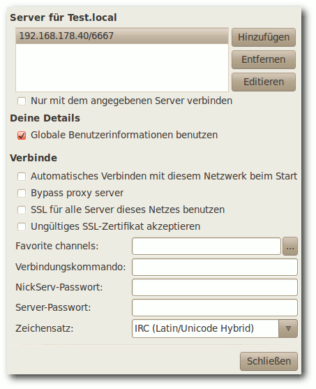

freiesMagazin Juni 2011 (ISSN 1867-7991)
Topthemen dieser Ausgabe
Ubuntu 11.04 – Vorstellung des Natty Narwhal
Am 28. April 2011 wurde Ubuntu 11.04 freigegeben. Der Artikel gibt einen Überblick über die Neuerungen der Distribution mit besonderem Augenmerk auf das neue Desktop-System „Unity“, welches im Vorfeld bereits für viel Furore sorgte. (weiterlesen)
GNOME 3.0: Bruch mit Paradigmen
Mit der Freigabe von GNOME 3 bricht der Entwicklerkreis rund um die Desktopumgebung mit vielen gängigen Paradigmen der Benutzerführung und präsentiert ein weitgehend überarbeitetes Produkt, das zahlreiche Neuerungen mit sich bringt. Drei wesentliche Punkte sind in die neue Generation der Umgebung eingegangen: eine Erneuerung der Oberfläche, Entfernung von unnötigen Komponenten und eine bessere Außendarstellung. (weiterlesen)
UnrealIRC – gestern „Flurfunk“, heute „Chat“
Ungern brüllt man Anweisungen von Büro zu Büro. Damit Angestellte miteinander kommunizieren können, wird vielerorts zum Telefon gegriffen. Wird bereits telefoniert, muss die dienstliche E-Mail herhalten, um Kommunikationsbedürfnisse zu befriedigen. Was aber, wenn die Leitung belegt und das Senden einer E-Mail derzeit nicht möglich ist? Ein Chat ist die Lösung für das Problem. (weiterlesen)
Zum Index
Inhalt
Linux allgemein
Ubuntu 11.04 – Vorstellung von Natty
GNOME 3.0: Bruch mit Paradigmen
Der Mai im Kernelrückblick
Anleitungen
UnrealIRC – gestern „Flurfunk“, heute „Chat“
Software
Einblicke in Drupal
Hardware
Heimautomatisierung für Hardwarebastler (Teil 3)
Community
Rezension: Praxiskurs Unix-Shell
Rezension: Computergeschichte(n) – nicht nur für Geeks
Magazin
Editorial
Leserbriefe
Veranstaltungen
Vorschau
Konventionen
Impressum
Zum Index
Editorial
Traut Euch und macht mitWer nicht wagt, der nicht gewinnt
Die Reaktionen auf unsere These im Editorial des letzten Monats [1] waren recht gut. Zur Erinnerung: Wir fragten, ob – nach der bescheidenen Teilnehmerzahl am Grafikwettbewerb [2] – auch die Linux-Community zu einer reinen Konsumgesellschaft verkommt. Wie in den Leserbriefen nachzulesen ist, gab es einige Zustimmungen, aber auch kritische Gegenstimmen. Was uns aber sehr gewundert hat, waren sehr häufige Bemerkungen der Art „Ich habe mir eh keine Chancen ausgerechnet bei der Masse an professionellen Einsendungen“. Wie jetzt jeder weiß, haben wohl sehr viele Leser so gedacht, was die geringe Teilnahme am Wettbewerb erklären könnte. Achtung, jetzt wird es politisch: Das obige Beispiel zeigt sehr schön, wieso man wählen sollte. Wenn jeder potenzielle Wähler einer „normalen“ Partei (was auch immer das ist) sich denkt, dass die Wahl eh nichts bringt und andere schon wählen gehen werden, kann es am Ende passieren, dass irgendeine extreme Partei mit ganz wenig Stimmen die Wahl gewinnt. Als alternatives Beispiel: Wer bei einem Wettbewerb erst gar nicht teilnimmt, hat automatisch verloren. Erst durch die Teilnahme gibt es überhaupt eine Chance, etwas zu gewinnen – auch wenn diese Chance vielleicht verschwindend gering ist. Dies gilt im Übrigen für fast alles im Leben: sei es die Frage nach einer Gehaltserhöhung, das erste zögerliche Gespräch mit seinem Schwarm oder der Umzug ins Ausland, um eines neues Leben zu beginnen. Wer diese Schritte nicht wagt, wird auf alle Fälle nicht enttäuscht, das stimmt. Aber er wird auch nie die positiven Konsequenzen seines Handelns spüren, wenn er es nicht zumindest versucht. (Es erfolgt hier explizit der Hinweis, dass das nicht für alles gilt. Der Sprung aus einem Fenster im zehnten Stock eines Hochhauses, nur um zu wissen, wie sich das anfühlt, ist eine blöde Idee.)Call for Papers zur Ubucon 2011
Einige Leser werden es vielleicht schon gesehen haben: Vom 14. bis 16. Oktober 2011 soll in Leipzig die fünfte Ubucon stattfinden [3]. Wieso erwähnen wir das hier explizit und verlinken es nicht nur im Veranstaltungskalender wie gewohnt? Zum einen, weil wir die Wurzeln von freiesMagazin nicht vergessen haben, die ganz klar bei Ubuntu und beim Portal ubuntuusers.de [4] liegen. Die Ubucon wird zu einem großen Teil genau von den Leuten hinter diesem Portal getragen. Zum anderen aber auch, weil die Veranstaltung die letzten Jahre einen sehr guten Anlaufpunkt für alle Neueinsteiger und Anfänger gebildet hat. Die Vorträge beschäftigten sich nur selten mit extrem speziellen Problemen, sondern zeigten das, was den Normalanwender auch interessiert. Sollte also ein freiesMagazin-Leser bzw. -Autor Lust haben, Leipzig im Oktober einen Besuch abzustatten, kann er auf der Ubucon vorbei schauen und dabei auch gleich einen Vortrag halten. Wer meint, dass sich das nicht lohnt, weil ganz viele andere, viel bessere Vorschläge bei der Ubucon-Organsation eingehen und der eigene Vortrag dagegen „schlecht“ aussieht, sollte sich noch einmal die ersten Absätze dieses Editorials durchlesen.Serverumzug
Wie sicherlich einige unserer Webseiten-Besucher wissen, wird der Server, auf denen die freiesMagazin-Dienste wie Webseite, FTP, Versionsverwaltung, Wiki etc. laufen, von der Firma x|encon [5] gesponsort. Da der bisherige Server eine für die Zukunft ungenügende Hardwareausstattung hat, haben wir (ohne unser Zutun) einen neuen Server gestellt bekommen:| Hardwarevergleich | ||
| Hardware | Alter Server | Neuer Server |
| RAM | 256MB | 1024MB |
| HDD | 20GB (nach Upgrade!) | 40GB |
| CPU | 1x | 2x |
| HVM | Nein | Ja |
| VNC | Nein | Ja |
[1] http://www.freiesmagazin.de/freiesMagazin-2011-05
[2] http://www.freiesmagazin.de/20110430-gewinner-des-grafikwettbewerbs
[3] http://ikhaya.ubuntuusers.de/2011/05/12/ubucon-2011-call-for-papers-gestartet/
[4] http://ubuntuusers.de/
[5] http://www.xencon.net/
[6] https://secure.wikimedia.org/wikipedia/de/wiki/Logical_Volume_Manager
[7] http://www.freiesmagazin.de/20110527-serverumzug
Das Editorial kommentieren
Zum Index
Ubuntu 11.04 – Vorstellung des Natty Narwhal
von Hans-Joachim Baader Am 28. April 2011 wurde Ubuntu 11.04 freigegeben. Dieser Artikel gibt einen Überblick über die Neuerungen mit besonderem Augenmerk auf das neue Desktop-System „Unity“. Redaktioneller Hinweis: Der Artikel „Ubuntu 11.04“ erschien erstmals bei Pro-Linux [1].Vorwort
Planmäßig wie jedes halbe Jahr erschien die neue Version 11.04 „Natty Narwhal“ der Linux-Distribution Ubuntu. Unter den vielen Neuerungen ragt wohl eine besonders heraus: der neue Desktop „Unity“, der zuvor schon als Desktop für Netbook-Systeme im Einsatz war und jetzt der Standard-Desktop auf allen Rechnern ist, die die Hardware-Anforderungen erfüllen. Schon im Vorfeld wurde viel über das Für und Wider von Unity diskutiert.Unity mit Starter, Kontrollzentrum und schmalen Scrollbalken.
Wie ihr Vorgänger Ubuntu 10.10 (siehe „Ubuntu 10.10“, freiesMagazin 11/2010 [2]) ist die neue Version keine Version mit längerfristigem Support. Sie wird in allen Varianten 18 Monate mit Sicherheits- und anderen wichtigen Updates versorgt. Ein Update ohne Neuinstallation von der Version 10.10 wird offiziell unterstützt. Ubuntu erscheint in mehreren Varianten, deren Hauptunterschied in den Installationsmedien und dem Umfang der vorinstallierten Software liegt. Die von Canonical hervorgehobenen Varianten sind jedoch die Desktop-Edition mit Unity als Oberfläche und die Server-Edition. Die weiteren offiziell unterstützten Varianten sind Kubuntu, Xubuntu, Edubuntu, Ubuntu Studio und Mythbuntu. Dieser Artikel wird sich auf Ubuntu und Kubuntu beschränken. Aus praktischen Gründen sind auch andere Einschränkungen nötig. So wurden natürlich zahlreiche zur Distribution gehörende Softwarepakete geändert, manche auch ersetzt. Mit wenigen Ausnahmen kann auf diese Änderungen nicht eingegangen werden; man darf annehmen, dass die meisten Pakete unter allen aktuellen Distributionen nahezu gleich sind und überall gleich gut funktionieren. Es sei noch angemerkt, dass es sich bei diesem Artikel nicht um einen Test der Hardwarekompatibilität handelt. Es ist bekannt, dass Linux mehr Hardware unterstützt als jedes andere Betriebssystem und das überwiegend bereits im Standard-Lieferumfang. Ein Test spezifischer Hardware wäre zu viel Aufwand für wenig Nutzen. Dies sei denen überlassen, die es für nötig halten. Die bekannten Probleme von Ubuntu 11.04 mit Hardware sind in den Anmerkungen zur Veröffentlichung [3] aufgeführt. Da eine Erprobung auf realer Hardware nicht das Ziel ist, werden für den Artikel zwei identische virtuelle Maschinen, 64 Bit, unter KVM mit jeweils 768 MB RAM verwendet. Weil KVM nicht die nötigen Voraussetzungen für Unity bietet, wird eine weitere 64-Bit-VM unter Virtualbox hinzugezogen.
Installation
Ubuntu wird meist von einem Live-System aus, das als CD und umfangreichere DVD verfügbar ist, installiert. Ferner ist eine Installation von der „Alternate-CD“ möglich, die im Textmodus läuft, aber wesentlich mehr Flexibilität als die grafische Installation besitzt. Für Ubuntu 11.04 werden 384 MB RAM für den Unity-Desktop als Mindestanforderung angegeben. Mit 512 MB und mehr läuft das System allerdings wesentlich besser. Kubuntu ist aufgrund des größeren Speicherbedarfs von KDE unter 512 MB RAM fast nicht zu benutzen – aber wer den Rechner intensiv nutzt, sollte bei den heutigen Speicherpreisen lieber gleich in 4 bis 8 GB RAM und ein 64-Bit-System investieren, so dass reichlich Platz für die Anwendungen ist. Xubuntu und die Server-Edition sollten weiterhin mit 128 MB auskommen.Startbildschirm der Desktop-DVD.
Im Folgenden soll nur die Installation von der Desktop-DVD kurz vorgestellt werden. Wer den Logical Volume Manager (LVM) verwenden will, muss zur textbasierten Installation von der DVD oder der Alternate-CD wechseln, da diese Möglichkeit im grafischen Installer nach wie vor fehlt. Die Alternate-Installation läuft ansonsten fast genauso ab wie die grafische Installation. Durch Boot-Optionen steht aber eine erweiterte Installation zur Verfügung, mit der man weitgehende Kontrolle über den ganzen Vorgang hat. Die Installation unterlag nur wenigen Änderungen gegenüber der letzten Version, die ja etwas umgestellt und verbessert wurde. Das Einrichten der Festplatte ist nun noch einfacher und bietet einige weitere Optionen. So kann ein bereits installiertes Ubuntu-System vom Desktop-Installer aus aktualisiert oder neu installiert werden, wenn eine Internet-Verbindung vorhanden ist. Ist die vorherige Installation bereits Ubuntu 11.04, kann das allerdings zu kuriosen Vorschlägen wie „Ubuntu 11.04 auf Ubuntu 11.04 aktualisieren“ führen.
Merkwürdige Formatierungsoptionen.
Das Dateisystem Btrfs kann nun ausgewählt werden und das System sollte dank eines GRUB-Moduls auch mit diesem booten können. Btrfs wird in den Anmerkungen zur Veröffentlichung ausdrücklich noch als experimentell gekennzeichnet, aber mit einigen kleinen Einschränkungen sollte es nutzbar sein. Im Test kam es während der Formatierung zu einem nicht in den Anmerkungen genannten Fehler, sodass ext4 als Dateisystem gewählt werden musste. Auch bei einer weiteren Testinstallation trat dieser Fehler auf.
Fehler beim Anlegen von Btrfs.
Von diesen Makeln abgesehen funktioniert die Partitionierung korrekt. An das Einrichten mindestens einer Swap-Partition wird man gegebenenfalls erinnert und es wird gewarnt, wenn die Root-Partition zu klein für die Installation ist. Hier hat das Programm gegenüber der letzten Version hinzugelernt, denn es warnt nun nicht mehr, wenn man die Root-Partition klein macht und eine separate, ausreichend große Partition für /usr anlegt. Der Einbindungspunkt kann nun nicht mehr frei eingegeben werden, sondern man ist auf die Auswahl beschränkt, die Ubuntu vorgibt.

Dateisystemauswahl bei der Partitionierung.
Direkt nach der Definition der Partitionen beginnt der Installer mit der Partitionierung und der Installation der Pakete im Hintergrund. Ein Fortschrittsbalken zeigt von hier ab den Stand der Installation an. Parallel dazu kann man die Zeitzone auswählen und danach das gewünschte Tastatur-Layout einstellen. Im letzten Schritt gibt man seinen Namen, Anmeldenamen, Passwort und den Computernamen ein. Wenn zuvor bereits per DHCP ein Name ermittelt werden konnte, wird dieser als Vorgabe angezeigt. Wenn erkannt wird, dass die Installation in einer virtuellen Maschine läuft, wird dagegen der Name benutzer-virtual-machine vorgegeben. Optional können Daten im Home-Verzeichnis verschlüsselt werden. Während man das Ende der Installation abwartet, kann man nun noch einige Tipps zu Ubuntu ansehen.
Laufender Betrieb
Das System startet, gleichgültig ob Ubuntu oder Kubuntu, schnell. Sofern kein automatisches Login konfiguriert wurde, muss man sich anmelden, was unter Ubuntu mit gdm, unter Kubuntu mit kdm geschieht. Danach wird der vollständige Desktop zügig aufgebaut. Der Kernel wurde auf Linux 2.6.38.2 aktualisiert (siehe „Was Natty antreibt: Ein Blick auf den Kernel von Ubuntu 11.04“, freiesMagazin 05/2011 [4]). Da sich die folgenden Ausführungen ausschließlich auf den Desktop beziehen, ist dies nur ein kleines Detail am Rande. Wie gewohnt hat Root keinen direkten Zugang zum System. Zugang zum Root-Account ist aber über das Kommando sudo vorhanden. Damit kann man jeden beliebigen Befehl ausführen, nachdem man sein eigenes Passwort eingegeben hat. Wenn man, nachdem man als Root eingeloggt ist, ein Passwort vergibt, ist auch das direkte Einloggen als Root möglich. Der GNOME-Desktop benötigt mit einem Terminalfenster ohne weitere offene Programme etwa 350 MB, nachdem in der Vorversion noch 220 MB gemessen wurden. Der Grund für diese Zunahme ist zum einen der Daemon ubuntuone-syncd, der im Testsystem mehr Speicher frisst als X11. Zum anderen ist auch der zeitgeist-daemon hinzugekommen, der auf diesem System 21 MB resident belegt. „Erschreckend“ ist, wie wenig dynamische Bibliotheken dabei gemeinsam benutzt werden. So belegt ubuntuone-syncd 45 MB resident, davon sind nur 11 MB dynamischen Bibliotheken zuzuordnen. Hier wäre einmal ein Aufräumen überfällig. Allerdings ist das Problem, von ubuntuone-syncd abgesehen, nicht Ubuntu-spezifisch. KDE benötigt etwa 430 MB, die Zunahme im Vergleich zum letzten Test scheint aber auf Änderungen an der virtuellen Maschine zu beruhen, wodurch X11 mehr Speicher belegt. Das zeigt wieder einmal, dass die Angaben zum Speicherverbrauch nur Anhaltswerte darstellen, die sich je nach Hardware erheblich unterscheiden können.Unity
Die größte Neuerung im Desktop-Bereich ist zweifellos Unity, das allerdings nicht als eigene Desktopumgebung gelten kann, sondern lediglich als alternative Oberfläche für GNOME. Unity entstand als Netbook-Oberfläche und feierte in der Netbook-Edition von Ubuntu 10.10 sein Debüt. Nach Differenzen zwischen Ubuntu und GNOME (GNOME 3 kam nach Ansicht von Ubuntu zu früh) wurde das Ziel ausgegeben, Unity zur Standard-Oberfläche zu machen, und nach zwischenzeitlichen Zweifeln [5] auch erreicht. Aufgrund der Kontroversen, in die sich auch der bekannte Buchautor Michael Kofler mit einer kritischen Beurteilung einschaltete [6], durfte man sehr gespannt sein, wie sich Unity mittlerweile anfühlt. Unity beruht noch ganz auf GNOME 2 (2.32.1) und Compiz, aber ein paar Komponenten von GNOME 3 sind enthalten: Die Barrierefreiheitstechnologie gnome-orca, der Client für soziale Netze Gwibber, das Online-Hilfeprogramm Yelp und interessanterweise auch der Aktivitätsaufzeichnungsdienst Zeitgeist 0.7.1. Mit Zeitgeist wird eine semantische Suche möglich; wo sie nutzbar ist, bleibt aber unklar – in die normalen GNOME-Komponenten kann sie noch nicht integriert sein.Fehlende Hardware-Voraussetzungen für Unity.
Unity benötigt derzeit 3-D-Beschleunigung in der Hardware, wohl weil es als Compiz-Plug-in realisiert ist. Wo 3-D nicht verfügbar ist, wird auf den klassischen GNOME-Desktop umgeschaltet. Dies kann man auch von Hand einstellen, wenn man Unity nicht verwenden will. Geplant ist aber, dass Unity künftig auch ohne 3-D auskommen soll. Dieses „Unity 2-D“ ist jetzt schon auf der ARM-Netbook-Edition von Ubuntu zu finden und wird wohl in Ubuntu 11.10 Standard. Das klassische GNOME wird damit entfallen – eine logische Entscheidung, da GNOME 2.x dann schon alt ist und nicht mehr gewartet wird. Die Weiterentwicklung von Unity wird also auf GNOME 3 aufsetzen (müssen). Vorweg sollen zwei wesentliche Komponenten, der Starter und die Schnellauswahl, erwähnt werden, damit die nachfolgenden Ausführungen klarer werden. Der markante Starter, der am linken Bildschirmrand eingeblendet wird, dient hauptsächlich zum schnellen Starten von Programmen. Durch Klick auf das Ubuntu-Symbol oben wird die Schnellauswahl (Dash) gestartet, mit der man nach Anwendungen suchen oder sich durch Kategorien klicken kann. Bei der Dash handelt es sich im Prinzip um einen Browser, doch leider kann sie nicht als solcher bedient werden. So fehlt eine einfache Möglichkeit, eine Ebene zurück zu gehen und beim Überfahren eines Icons mit dem Mauszeiger wäre es sinnvoll, Informationen dazu anzuzeigen, so wie es Dateimanager üblicherweise schon machen. Aber vielleicht kommt das alles noch.
Die Schnellauswahl (Dash).
Um herauszufinden, wie sich Unity anfühlt und warum es kritisiert wurde, wurde überlegt, welche Aktionen man üblicherweise auf dem Desktop ausführt, um Anwendungen zu starten oder zu organisieren. Normalerweise setze ich KDE4 ein und arbeite hauptsächlich in mehreren Firefox-Fenstern mit einer größeren Anzahl von Tabs, einer Menge von Konsolen-Fenstern, ebenfalls mit zahlreichen Tabs, und Editoren. Die meisten Aufgaben sind auf der Kommandozeile weit schneller als durch Herumklicken auf einer wie auch immer gearteten Oberfläche zu erledigen, wenn man nur einigermaßen mit den Kommandos und der Shell vertraut ist. Sicher hat diese Arbeitsweise dabei aber keine Allgemeingültigkeit.
Der Arbeitsflächenumschalter.
Die Fenster werden bei mir in vier virtuellen Desktops organisiert, sodass das Umschalten zwischen den Arbeitsflächen zu den häufigsten Tätigkeiten gehört. Zufällig enthält Unity standardmäßig ebenfalls vier Arbeitsflächen, die allerdings im Quadrat angeordnet sind. Das Wechseln zwischen diesen ist über den im Starter vorhandenen Pager möglich. Klickt man diesen, sieht man die Arbeitsflächen in einer Übersicht und kann durch Doppelklick zu einer davon wechseln. Es ist klar, dass das zu umständlich ist. Glücklicherweise kann man Kurztasten definieren, mit denen man direkt zu einem der Arbeitsflächen gelangt. Diese wurden auf auf „Strg“ + „F1“ bis „Strg“ + „F4“ gelegt wie bei KDE. Das Umschalten mittels dieser Tasten ist dann mit einer kurzen Animation verbunden. Es wäre sinnvoll, wenn diese Tasten standardmäßig definiert wären; es gibt zwar zahlreiche vordefinierte Tasten, doch genau diese fehlten. Das Starten von Programmen per Tastatur ist mit „Alt“ + „F2“ möglich. Das ist die schnellste und oft bevorzugte Methode auch unter KDE. Kennt man den Namen des Programms nicht genau, kann man die Programmauswahl öffnen, welche installierte Programme anzeigt. Über das Suchfeld findet man schnell das Gewünschte. Gestartet wird das Programm dann mit einem Einzelklick. Leider ist das inkonsistent, da die meisten Aktionen ansonsten einen Doppelklick erfordern, so wie es üblicherweise in GNOME Classic eingestellt ist. Nicht nur Programme, sondern auch Ordner, die man dann in Nautilus öffnet, kann man auf diese Weise suchen. Generell scheint Unity stark auf das Suchen und weniger auf das Durchstöbern von Verzeichnishierarchien ausgerichtet zu sein. Dies ist eine durchaus praktische Neuerung, die wohl durch das Webbrowsen inspiriert wurde (die meisten Webseiten erreicht man, indem man danach sucht). Anwendungen lassen sich natürlich auch mit dem Starter starten; sie lassen sich ebenso aus dem Starter entfernen (durch Rechtsklick aus dem Kontextmenü oder durch Ziehen auf den Mülleimer), außer dem Arbeitsflächenumschalter und dem Mülleimer. Das Hinzufügen funktioniert durch das Ziehen aus dem Dashboard oder indem man eine bereits gestartete Anwendung, deren Icon im Starter erscheint, per Kontextmenü dort fixiert.
Die Programmauswahl.
Unity enthält auch Vertrautes: Ein Klick in ein Fenster bringt es in den Vordergrund; „Alt“ + „Tab“ erlaubt Wechsel zwischen Fenstern, allerdings zeigt es nicht den Namen der Anwendung an, was das Finden der richtigen Anwendung schwierig machen kann. Auch Copy & Paste funktionieren wie erwartet. Eine weitere, ziemlich kontroverse Neuerung von Unity ist, dass die Menüleiste von Anwendungen grundsätzlich im Panel am oberen Bildschirmrand erscheint. Das heißt, immer das Menü der gerade aktiven Anwendung erscheint dort, die anderen sind nicht sichtbar und belegen damit keinen Platz. Der Vorteil der Platzersparnis ist offensichtlich, die große Entfernung zwischen Anwendungsfenster und Menü, die sich auf großen Bildschirmen ergeben kann, ist allerdings sicher ein Nachteil. Ändern kann man es leider momentan nicht. Eine kleine Änderung könnte hier schon einen guten Kompromiss ergeben: Nur bei maximierten Anwendungen sollte die Menüleiste im Panel erscheinen. Noch besser wäre es allerdings, dies konfigurierbar zu machen, wobei eine globale Einstellung noch einmal fensterspezifisch änderbar sein sollte. In Kombination mit dem Starter ergibt die Anordnung der Fensterknöpfe links, die zu den strittigsten Neuerungen in Ubuntu 10.04 LTS gehörte, mehr Sinn, da damit der Weg des Mauszeigers vom und zum Starter kürzer ist. Ob man sich daran gewöhnen kann oder will, ist eine andere Frage. Wer es nicht will, kann immer noch ein anderes Theme auswählen, das die Buttons rechts belässt. Nicht Unity-spezifisch ist eine weitere Neuerung in Ubuntu 11.04: GNOME-Programme verwenden nun einen Scrollbalken, der weniger Platz [7] benötigt. Effektiv ist der Scrollbalken nur noch durch eine schmale Linie angedeutet und erst wenn man den Mauszeiger in dessen Nähe bewegt, wird der eigentliche Scrollbalken eingeblendet, je nach Platz innerhalb oder außerhalb des Fensters. Das spart Platz und funktioniert gut. Aber auch das wird nicht jedermanns Geschmack sein und ist auf großen Bildschirmen eher unnötig. Es sollte daher eine Option geben, die alten Scrollbalken wieder herzustellen. Das wäre schon im Rahmen der Barrierefreiheit notwendig. Es ist geradezu grotesk, dass man sich auf der einen Seite der Barrierefreiheit annimmt und dann gleichzeitig ein neues, für manche Benutzer schwer bedienbares Element einführt, das sich nicht einmal abschalten lässt. Der neue Scrollbalken ist übrigens auf reine GTK+-Programme beschränkt und einige Programme, die nicht in diese Kategorie fallen, z. B. Firefox und Programme, die mit wxWidgets geschrieben sind, zeigen weiterhin den alten Scrollbalken. Zudem wurden einige Anwendungen per Schwarzer Liste [8] von dem neuen Design ausgeschlossen. Wenn man eine Anwendung maximiert, blendet sich der Starter aus. Durch Anfahren des linken Bildschirmrandes wird er wieder eingeblendet. Das Verschieben von Fenstern auf eine andere Arbeitsfläche funktioniert, wie bei KDE, über das Fenstermenü. Die Option „Fenster aktivieren, wenn sich die Maus darüber befindet“, die es im GNOME-Kontrollzentrum gibt, sollte man ausgeschaltet lassen, da sie nicht korrekt mit Unity zusammenarbeitet. So wird, wenn eine Anwendung maximiert ist, immer deren Menü angezeigt, selbst wenn eine andere, nicht maximierte Anwendung aktiv ist. Denn die maximierte Anwendung wird ja aktiv, wenn man mit dem Mauszeiger zur Menüleiste fährt. Das wäre ein weiteres Argument für den obigen Vorschlag, das Anwendungsmenü nur bei maximierten Anwendungen im Panel anzuzeigen. Hat man viele Anwendungen in den Starter eingetragen oder gestartet, werden die Icons schräg gestellt (Ziehharmonika-Effekt). Das ist ein pfiffiger Effekt, aber das Scrollen, das teilweise langsam ist, wird damit nicht ganz vermieden. Alternativen wären kleinere Icons oder die Darstellung in zwei oder mehr Spalten. Kleinere Icons lassen sich über CompizConfig einstellen.
Ein Starter mit vielen Icons.
Damit nun (endlich) zum Thema Konfiguration. Standardmäßig mitgeliefert wird das GNOME-Kontrollzentrum, dessen Punkte unter GNOME Classic auch im Menü „System“ zu finden sind. Viele Aspekte, auch von Unity, sind über CompizConfig änderbar. Ärgerlicherweise ist dieses Programm aber nicht vorinstalliert. Man sollte es daher gleich installieren; es verbirgt sich im Software-Center hinter „Einstellungen für erweiterte Arbeitsoberflächeneffekte (ccsm)“. Damit lassen sich einige, aber noch nicht alle Aspekte von Unity anpassen. Beispielsweise muss man den Starter auf der linken Bildschirmseite belassen.
Kritik von Michael Kofler
Im Artikel von Michael Kofler [6] wurden eine Reihe von Dingen an Unity kritisiert. Die genannte „übertriebene Platzoptimierung“ kann man durchaus nachvollziehen, wenn man z. B. das Erscheinen des Menüs von Anwendungen im globalen Panel betrachtet. Wie schon geschrieben, wäre es optimal, wenn das Menü nur bei den maximierten Anwendungen ins Panel gesetzt werden würde. Das genaue Verhalten sollte über Optionen fein einstellbar sein. Das „Zielgruppenproblem“ sehe ich weniger. Ubuntu richtet sich, auch nach den jüngsten Äußerungen von Marketing Manager Gerry Carr [9], immer noch überwiegend an Umsteigewillige aus dem Windows-Lager. Damit ist die Aussage von Herrn Kofler entkräftet. Natürlich nutzen auch viele andere Anwender Ubuntu, wie Herr Kofler bestätigt; das eine schließt das andere nicht aus, zumal es für die meisten Benutzer keinen Grund gibt, von Ubuntu weg zu wechseln. Es folgt ein Blick auf die konkret aufgeführten Kritikpunkte von Michael Kofler:- „Das Unity-Dock befindet sich am linken Bildschirmrand. Wer das
Dock lieber rechts, unten oder oben hätte – Pech gehabt.“
Korrekt, aber zumindest ist derzeit eine Konfigurationsmöglichkeit vorgesehen, nur funktioniert sie nicht. - „Die Größe der Icons ist fix vorgegeben (kann mit CCSM verändert
werden).“
Da sie geändert werden kann, existiert das Problem gar nicht. - „Fenster sind von Schatten umgeben. Das sieht gut aus – es sei
denn, man will Screenshots erstellen. Früher ließ sich der Schatten
mit dem CCSM einstellen – jetzt nicht mehr (siehe Launchpad).
(Abhilfe: Erstellen Sie Ihre Screenshots mit Shutter!)“
Der Schatten lässt sich sehr wohl einstellen. Leider fehlt ein einfacher Ein-/Aus-Schalter. Mit den vorhandenen Einstellungen kann man aber den Schatten unsichtbar machen. - „Im Launcher (also im Startmenü) befinden sich außer dem Suchmenü
gerade einmal acht Icons (auch wenn der Bildschirm 1920×1600 Pixel
groß ist). Die Icons sind fix vorkonfiguriert. Die Folge: Ich
arbeite mittlerweile vollkommen ohne Startmenü. Häufig benötigte
Programme sind im Dock, den Rest starte ich mit „Alt“ + „F2“.“
Bis auf die Anwendungs- und Ordnerauswahl und den Mülleimer lassen sich alle Icons austauschen. - „Unter Unity gibt es ein Zentralmenü im Panel (nicht mehr in der
Leiste des jeweiligen Fensters). Auf kleinen Bildschirmen spart das
Platz, auf großen Bildschirmen macht es die Bedienung des Menüs
aber extrem umständlich. Auch hier keine Wahlmöglichkeit.“
Sehe ich genauso, wie oben schon erläutert. - „Der Arbeitsflächenumschalter ist fixer Bestandteil des Docks – ganz egal, ob man Arbeitsflächen verwenden möchten oder nicht. (Und gerade Einsteiger, für die Unity ja anscheinend konzipiert wurde, werden Arbeitsflächen anfänglich wohl eher nicht brauchen.)“ Das ist zum einen Ansichtssache; Ubuntu ist der Ansicht, dass seine Zielgruppe – die Windows-Umsteiger – mehrere Arbeitsflächen verwenden möchten. Außerdem verschwindet der Arbeitsflächen-Umschalter nach einem Neustart, wenn man über die Compiz-Einstellungen die virtuelle Größe des Desktops auf 1x1 gesetzt hat.
GNOME-Desktop
Wenn man Unity und die Scrollbalken ausnimmt, bringt erstmals seit Bestehen von Ubuntu eine neue Version keine wesentlichen Änderungen im GNOME-Desktop, denn die GNOME-Version blieb 2.32 (genaugenommen 2.32.1). Im Umfeld gab es dennoch, wie nach den turbulenten Entwicklungen der letzten sechs Monate zu erwarten war, zahlreiche Änderungen. Als Webbrowser wird jetzt Firefox 4 eingesetzt. Das Standard-Office-Paket änderte sich zu LibreOffice 3.3.2. Banshee 2.0.0 wurde der Standard-Musik-Player anstelle von Rhythmbox. Der X-Server 1.10.1 und Mesa 7.10.2 bilden die Basis für die grafische Oberfläche einschließlich der 3-D-Beschleunigung. Der Online-Dienst Ubuntu One ermöglicht über sein Steuerfeld jetzt das selektive Synchronisieren und die Synchronisation von Dateien soll schneller vonstatten gehen. Das Software Center ermöglicht es nun, installierte Anwendungen zu bewerten, auch in Form von Anmerkungen, und hat weitere Verbesserungen in der Benutzbarkeit erhalten. Bewertungen zu einem Paket kann man nur abgeben, wenn man es installiert hat.Ubuntu Software Center mit Bewertungen, Empfehlungen und Neuheiten.
KDE-Desktop
Kubuntu [10] nutzt KDE SC 4.6.2, das unter anderem ein Neudesign der Aktivitäten bringt. Man kann nun Anwendungen und Dateien einer Aktivität zuordnen. Wechselt man zu einer bestimmten Aktivität, sieht man nur noch deren zugehörige Anwendungen. Das Konfigurieren von Aktivitäten verursacht zunächst etwas Rätselraten, bis man darauf kommt, dass bestimmte Stellen des Symbols anklickbar sind. Das könnte ein Hinweis sein, dass das Ganze intuitiver zu bedienen ist, als man im ersten Moment denkt. Die Energieverwaltung wurde neu geschrieben und kann nun mit Plug-ins erweitert werden. Mit dem neuen Richtlinien-Agenten kann man Energieprofile definieren, die festlegen, wann Energiesparfeatures aktiv sein sollen und wann nicht. Der Window- und Compositing-Manager KWin wurde optimiert und kann jetzt mehr Funktionalität der Grafiktreiber nutzen. Benachrichtigungen von Programmen, die bisher bei der Taskleiste eingeblendet wurden, können an eine beliebige Stelle verschoben werden. GTK-Anwendungen passen sich optisch dank eines neu geschriebenen Oxygen-GTK-Themes noch besser in die KDE-Umgebung ein. Kubuntu bringt neu ein Modul zur Verwaltung von Samba-Shares direkt aus dem Eigenschaftenmenü von Dolphin und ein neues Sprachauswahl-Modul mit. Die Druckerverwaltung wurde ebenfalls verbessert.Definition von Aktivitäten in KDE.
Als Webbrowser kommt weiterhin rekonq zum Einsatz, jetzt in Version 0.7.0. Das Programm erinnert mit seinem auf einen einzelnen Button reduzierten Menü entschieden an Chrome. Mein „Lieblings“-Themenblock, um darauf einzuhacken, war in den letzten Versionen stets KPackageKit. Das ist nun vorbei. In der neuesten Version wurde eine Repository-Verwaltung hinzugefügt, sodass nun alles, was man für die Paketverwaltung und Updates benötigt, vorhanden ist. Zwar hätte man die Oberfläche, wie schon mehrfach angemerkt, platzsparender gestalten können und möglicherweise ist die Suchfunktion noch nicht ganz intuitiv, aber das Programm versieht seinen Dienst einwandfrei. Ansonsten bringt KDE ein neues Standard-Hintergrundbild mit. Die Icons aus der letzten Version wurden beibehalten, was Geschmackssache ist. Viele KDE-Anwendungen wurden natürlich auch stark verbessert. Insgesamt hinterlässt KDE einen exzellenten Eindruck.
Multimedia im Browser und auf dem Desktop
Firefox, jetzt in Version 4, bringt als eine große Neuerung Unterstützung für WebM mit. Zahlreiche weitere Plug-ins zum Abspielen von Videos in freien Formaten sind vorinstalliert. Die vorinstallierte Erweiterung Ubuntu Firefox Modifications hat Version 0.9 erreicht. Darin ist der bereits bekannte Plug-in-Finder-Service enthalten. Will man beispielsweise ein Video in einer Webseite abspielen, lassen sich komfortabel passende Plug-ins finden und installieren. Das funktionierte im Test nicht immer; wenn der Bildschirm schwarz blieb, konnte man aber die Option „Im Video-Abspieler öffnen“ wählen. Dieser meldete dann, dass ein Plug-in fehlte und bot eine Suche danach an. Ein passendes Plug-in konnte dennoch nicht gefunden werden.Startseite von Firefox.
Flash ist wiederum ein anderes Thema. In der 64-Bit-Version ist klar, dass das Adobe-Flash-Plug-in nicht zur Verfügung steht. Warum Ubuntu hier aber nicht das Gnash-Plug-in anbietet oder vorinstalliert, ist rätselhaft, denn es funktioniert mit den meisten Flash-Videos gut. So muss man es manuell aus dem Paket browser-plugin-gnash installieren. In den bekannten Anwendungen Banshee und Totem ließen sich GStreamer-Plug-ins, die die standardmäßig nicht unterstützbaren Formate kennen, wie gewohnt problemlos installieren. Fast jedes Audio- und Video-Format ließ sich damit abspielen. Unter KDE ist Amarok, jetzt in Version 2.4.0, der Standard-Audioplayer. Anders als in der letzten Version lassen sich MP3-Dateien nicht ohne Weiteres abspielen. Der Grund dafür ist der Wechsel des KDE-Multimedia-Systems zu GStreamer als Phonon-Backend. Amarok erkennt aber, dass ein Plug-in fehlt, startet die Paketverwaltung, um danach zu suchen, und kann die benötigten Module erfolgreich installieren. Der Standard-Videoplayer ist Dragonplayer. Nachdem die GStreamer-Module bereits durch Amarok installiert wurden, ließ sich in dem Player alles abspielen, bis auf Flash-Videos. Die Ursache konnte bisher nicht ermittelt werden, Gnash war jedenfalls installiert. Im Dateimanager Dolphin fehlt weiterhin eine Dateizuordnung von Dateien mit dem Suffix .flv. Insgesamt ist die Multimedia-Integration sowohl in GNOME/Unity als auch in KDE recht problemlos, aber Verbesserungen wären immer noch möglich.
Fazit
Ubuntu ist, wie es ist. Es besitzt Stärken und Schwächen, daran wird sich auch nichts ändern. Auch Ubuntu 11.04 ist wieder eine sehr solide Distribution. Lediglich ein größeres Problem ließ sich finden, die Partitionierung als Btrfs-Partition. Für alle anderen Dinge, die einen stören könnten, gibt es entweder Workarounds oder es sind Kinderkrankheiten, die in den nächsten Wochen durch Updates beseitigt werden. Wer sicher gehen will, sollte mit der Installation einfach noch einige Wochen warten. Unity wird ein ganz großer Wurf – wenn es einmal fertig ist. Das ist in der aktuellen Version klar nicht der Fall. Unity in Ubuntu 11.04 ist ein Experiment, aber ein durchaus gelungenes, wenn man von fehlenden Konfigurationsmöglichkeiten absieht. In der kommenden Version könnte das ganz anders aussehen, denn dann wird Unity GNOME 2 als Basis verlassen und auf GNOME 3 portiert. Damit wird wohl auch Compiz entfallen, außerdem wird Unity auch ohne 3-D-Beschleunigung funktionieren. Und wer weiß, vielleicht wird es bereits eine erste Version von Wayland als Ersatz für X11 geben. Einen Vergleich zu GNOME 3 kann noch nicht gezogen werden, hierzu muss man erst das Ergebnis von Fedora 15 abwarten. KDE galt lange als ziemlich vernachlässigt und Kubuntu nicht gerade als erste Wahl für KDE-Anwender. Mittlerweile hat sich das gewandelt. Natürlich wurde das Software Center nicht für KDE entwickelt, aber wer möchte, kann es dennoch nutzen. Ob und wie sich Ubuntu One unter KDE nutzen lässt, ist nicht bekannt. Ubuntu will bekanntlich in erster Linie umstiegswillige Windows-Anwender ansprechen. Das wird immer noch gerne mit unerfahrenen Anwendern gleichgesetzt, doch davon kann keine Rede sein. Ubuntu kann genauso auch von erfahrenen Linux-Anwendern genutzt werden. Sowohl Ubuntu als auch Kubuntu sind in dieser Version besonders gelungen und lassen für die Zukunft noch viel Gutes erwarten. Links[1] http://www.pro-linux.de/artikel/2/1506/ubuntu-1104.html
[2] http://www.freiesmagazin.de/freiesMagazin-2010-11
[3] https://wiki.ubuntu.com/NattyNarwhal/ReleaseNotes
[4] http://www.freiesmagazin.de/freiesMagazin-2011-05
[5] http://www.pro-linux.de/news/1/16923/unity-in-ubuntu-stabilisiert-sich.html
[6] http://www.pro-linux.de/artikel/2/1504/unity-der-anfang-vom-ende-fuer-ubuntu.html
[7] http://www.pro-linux.de/news/1/16790/neues-scrollbar-design-fuer-ubuntu.html
[8] https://wiki.ubuntu.com/Ayatana/ScrollBars#Blacklist
[9] http://www.netzwelt.de/news/86520-gerry-carr-ubuntu-interview-konnten-gnome-3-warten.html
[10] http://kubuntu.org/news/11.04-release
| Autoreninformation |
| Hans-Joachim Baader (Webseite) befasst sich seit 1993 mit Linux. 1994 schloss er sein Informatikstudium erfolgreich ab, machte die Softwareentwicklung zum Beruf und ist einer der Betreiber von Pro-Linux.de. |
Zum Index
GNOME 3.0: Bruch mit Paradigmen
von Mirko Lindner Mit der Freigabe von GNOME 3 bricht der Entwicklerkreis rund um die Desktopumgebung mit vielen gängigen Paradigmen der Benutzerführung und präsentiert ein weitgehend überarbeitetes Produkt, das zahlreiche Neuerungen mit sich bringt. Drei wesentliche Punkte sind in die neue Generation der Umgebung eingegangen: eine Erneuerung der Oberfläche, Entfernung von unnötigen Komponenten und eine bessere Außendarstellung. Redaktioneller Hinweis: Der Artikel „GNOME 3.0: Bruch mit Paradigmen“ erschien erstmals bei Pro-Linux [1].Die Vergangenheit …
Die Desktopumgebung GNOME [2] glänzte in den letzten Jahren nicht unbedingt durch radikale Änderungen und Konzepte, die sich jenseits vom Altbewährten bewegten. Die Oberfläche von GNOME wurde zwar sukzessive poliert und durch neue Funktionen erweitert, einen Bruch mit Altbewährtem schaffte sie trotzdem nicht. Die zentralen Komponenten der Umgebung datieren auf den Anfang des Jahrhunderts, als mit GNOME 2 Schluss mit den bestehenden Strukturen war. Einen der Gründe für die Beständigkeit stellte GTK+ dar. Das Toolkit bildet die Basis der grafischen Oberflächen von GNOME und vielen weiteren Programmen. Trotz einiger recht einschneidender Änderungen wurde die Programmierschnittstelle seit der Version 2.0 kompatibel gehalten, so dass ältere Programme quellcode- oder gar binärkompatibel bleiben. Es erklangen allerdings zunehmend Stimmen [3], wonach die Funktionalität von GTK+ nicht mehr für künftige Entwicklungen ausreiche und das Team sich einer neuen Generation des Toolkits widmen solle. Mit der Entscheidung, GTK+ radikal zu erneuern, wurde auch der Weg zu GNOME 3 geebnet. Herausgekommen ist dabei eine Umgebung, die viele bekannte Strukturen begräbt und die Anwender durch neue Konzepte zu überzeugen versucht.Der Standarddesktop von GNOME 3.0 mit eingeblendeten Optionen für Barrierefreiheit.
… und die Zukunft
Mit der Freigabe von GNOME 3 verabschiedet sich die Umgebung von vielen bekannten Einrichtungen und präsentiert ein weitgehend neues Arbeitsgefühl. Die Hauptkomponente der aktuellen Generation der Umgebung stellt dabei die GNOME Shell [4] dar. Diese fungiert als zentrale Stelle und ersetzt nicht nur das bisherige Panel, sondern auch zahlreiche weitere Einrichtungen. Der ganz in Schwarz gehaltene Bereich der GNOME Shell gliedert sich dabei in drei verschiedene Bereiche. Ganz rechts ist der Systembereich zu finden, unter dem die Standardkomponenten zur Steuerung der Lautstärke, des Netzwerks und der Barrierefreiheit sowie der Strom- und Batteriestatus eingegliedert wurden. Zudem beinhaltet der Bereich das Benutzermenü, das einen Zugriff auf das Kontrollzentrum, die Konteneinstellungen oder die Benutzersteuerung ermöglicht. Zudem kann hier der Anwender seinen Status setzen und sich vom System abmelden. Hier ist auch der erste Bruch zu sehen, denn standardmäßig verzichtet GNOME der Einfachheit wegen auf eine Funktion zum Herunterfahren und bietet nur den Punkt „Suspend“ zur Auswahl an. Will der Anwender des System herunterfahren (Shutdown), muss er die „Alt“-Taste drücken. Ferner verzichtet GNOME 3.0 in diesem Bereich auch auf ein dynamisches Panel, wie er noch in der alten Version Usus war. So lassen sich hier weder Benachrichtigungen noch weitere Applets einbinden. Eine spätere Integration ist auch nicht geplant.Aktivitäten
Der zweite Bruch mit den herrschenden Gepflogenheiten findet sich auf der linken Seite der GNOME-Shell-Leiste in Form eines Aktivitäteneintrags. Ein Klick auf den Button, der Druck der „Windows“-Taste, das Kommando „Alt“ + „F1“ oder das Bewegen der Maus in die linke obere Ecke blenden einen Überblickmodus ein, der einen der zentralen Bereiche der Umgebung ausmacht. In einer Exposé-ähnlichen Ansicht finden die Anwender alle Informationen über laufende Anwendungen. Auf der linken Seite des Bildschirms ist dabei der so genannte „Dash“ – ein Bereich, der in einer Icon-Ansicht die favorisierten und gerade ausgeführten Anwendungen auflistet. Bewegt der Anwender die Maus über ein Icon, blendet die Shell weitere Informationen ein. Ein Klick auf ein Icon bringt weitere Funktionen zum Vorschein.Die neue Übersicht blendet ausgeführte Applikationen ein.
Den Hauptbereich der Ansicht bildet die Übersicht über die laufenden Anwendungen, wohingegen auf der rechten die momentanen Workspaces angedeutet sind. So können Anwendungen zwischen verschiedenen Workspaces verschoben werden, wobei GNOME 3 nicht mehr wirklich zwischen Workspaces trennt und die Anzahl der Workspaces bei Bedarf erweitert. Schiebt ein Anwender beispielsweise eine Applikation auf ein leeres Workspace, wird ein neues leeres Workspace erstellt. Schließt er dagegen das letzte Fenster eines Workspaces, wird auch der Bereich geschlossen. Ein Klick auf ein Workspace wechselt zu diesem. Eine Neuerung gegenüber GNOME 2 ist hier, dass die Anordnung der Workspaces nicht mehr horizontal, sondern vertikal erfolgt. Das Starten von neuen Anwendungen erfolgt wahlweise entweder durch eine direkte Eingabe, durch einen Klick auf ein Applikationsicon oder durch das „Verschieben“ eines Applikationsicons auf ein Workspace. Die zwei letzten Möglichkeiten können wahlweise auf einer Favoritenleiste oder auf einer Übersichtsseite erfolgen. Die Applikationen werden dabei auch hier als Icons gelistet. Je mehr Anwendungen installiert sind, desto kleiner werden die Icons der Übersichtsseite. Hier kann der Anwender auch eine Sortierung nach Kategorien durchführen.
Benachrichtigungen
Einen integralen Bestandteil von GNOME 3 stellt das Benachrichtigungssystem dar, das nun im unteren Bereich des Bildschirms angeordnet wurde. Das System unterscheidet zwischen wichtigen und weniger wichtigen Mitteilungen und blendet sie je nach Stufe unterschiedlich lange ein. Mehrere Meldungen einer Applikation werden zu einem Eintrag zusammengefasst und in Form eines Icons dargestellt. Dabei beschränkt sich das System auf die Ansicht der wichtigsten Informationen. Erst wenn der Anwender mit der Maus über einer Nachricht stehenbleibt, blendet die GNOME Shell weitere Informationen ein. Ein Klick auf die Nachricht startet, sofern vorhanden, die entsprechende Applikation. Verpasst ein Anwender eine Nachricht, so reicht es, mit der Maus in die untere rechte Ecke zu navigieren. Sofort blendet die Shell alle Nachrichten, die das System erhalten hat, ein. Auch hier werden die Ausgaben gruppiert dargestellt und können mittels eines Klicks erweitert werden.Fenstermanagement und das Aussehen
Für viel Wirbel sorgte im Vorfeld der Freigabe die Handhabung von Fenstern. So verzichtet GNOME 3.0 auf die Maximieren- und Minimieren-Buttons in der Leiste und stellt standardmäßig nur einen Button zum Schließen des Fensters zur Verfügung. Das Maximieren erfolgt entweder durch einen Doppelklick auf die Fensterleiste oder durch das Ziehen des Fensters in den oberen Bereich des Bildschirms. Wird ein Fenster dagegen an den linken oder rechten Bildschirmrand gezogen, wird es ähnlich Windows, oder neuerdings auch KDE, auf die Hälfte des Bildschirms angepasst. So lassen sich bequem beispielsweise zwei Dokumente oder Bilder nebeneinander einblenden, ohne dass eine manuelles Zentrieren notwendig wäre.Fensterleisten in GNOME 3.0 beinhalten nur noch den Schließen-Knopf.
Das weitere zentrale Merkmal von GNOME 3.0 stellt das Umschalten von Fenstern dar. Das System agiert in der neuen Version nicht mehr auf Fenster-, sondern auf Applikationsebene. Konkret heißt das, dass beim Betätigen der Tasten „Alt“ + „Tab“ mehrere geöffnete Fenster derselben Anwendung gruppiert dargestellt werden. Erst die Auswahl mittels der Maus oder Tastatur klappt ein Untermenü aus, aus dem ein spezielles Fenster herausgepickt werden kann. In der täglichen Arbeit erweist sich die Steuerung allerdings als wenig glücklich. Vor allem für Anwender, die viele Terminal-Fenster offen haben, werden eine Weile brauchen, bis das passende ausgesucht wurde. Einen besonderen Wert bei der Erstellung von GNOME 3 legten die Programmierer auf das Aussehen der Umgebung. Das neue Desktop-Theme kann vollständig über eine CSS-Syntax konfiguriert und an die eigenen Wünsche angepasst werden. Als Teil der Philosophie der Vereinfachung wurde auch die Darstellung von Icons auf dem Desktop entfernt. Laut Aussage der Entwickler lassen sich Daten sowieso schneller mittels der neuen Funktionen finden. Wer der Funktion nachtrauert, kann sie aber wieder einschalten. Den Preis der grafischen Pracht stellt allerdings die zwingende Voraussetzung von 3-D-Funktionen in der Hardware dar. Wer ein System sein eigen nennt, das über diese Funktionalität nicht verfügt oder schlicht nicht in der Lage ist, die grafische Anzeige darzustellen, muss auf einen Fallback-Modus von GNOME 3.0 zurückgreifen.
Weitere Neuerungen
Auch jenseits der GNOME Shell und des Windowmanagers Mutter bringt GNOME 3.0 zahlreiche Neuerungen mit sich. So bricht GNOME 3 mit dem alten Konzept der verteilten Konfiguration und bietet ein vollständig neues Kontrollzentrum, das die wichtigsten Funktionen unter einer Oberfläche vereint. Zudem wurden zahlreiche Anwendungen an die neue Umgebung angepasst.Das neue Kontrollzentrum und Benutzermenü.
So wurde der Instant Messenger Empathy [5] stärker in die Umgebung integriert. Zusammen mit dem neuen Benachrichtungungssystem erlaubt die Applikation eine erheblich schnellere Kommunikation. Eingehende Meldungen werden nun im unteren Bereich nicht nur eingeblendet, sondern können dort auch beantwortet werden. Das Setzen des Status im Benutzermenü hat zudem auch eine Auswirkung auf die Applikation. Zu den weiteren neuen Funktionen gehören unter anderem das Blocken von Konten und das Speichern von Passwörtern. Darüber hinaus können eingehende Anrufe automatisch abgelehnt werden. Bedingt durch die neue Arbeitsweise wurde auch der Dateimanager Nautilus [6] stark überarbeitet. Die in der Vergangenheit am oberen Rand angebrachte Kontrollleiste ist nun verschwunden. Ein ähnliches Schicksal erlitt die Statusleiste. Stattdessen nimmt nun die Navigationsleiste einen größeren Stellwert ein. Statusmeldungen werden dagegen als Overlay eingeblendet. Ebenfalls auf die Statusleiste verzichten muss der Webbrowser Epiphany [7]. Der Downloadmanager der Applikation wurde dagegen massiv überarbeitet. Neu ist ebenfalls die Gruppierung von Seiten. Außerdem wird nun das Orten per Geolocation in Epiphany unterstützt.
Evolution unter GNOME 3.0.
Des Weiteren haben die Entwickler die Hilfe der Umgebung komplett umgekrempelt. Zu den weiteren Neuerungen in GNOME 3.0 gehören ferner massive Überarbeitungen des Webcam-Tools Cheese. GNOME 3.0 bringt zudem Verbesserungen für den Texteditor gedit [8], wie beispielsweise eine verbesserte Rechtschreibprüfung, vollständige Unterstützung für komprimierte Dateien sowie die Möglichkeit, Dateien mit ungültigen Zeichen zu bearbeiten. Die neue Version von gedit enthält weiterhin eine neue Suchfunktion, welche die Sicht auf das bearbeitete Dokument nicht einschränkt, und Reitergruppen erlauben das Anzeigen mehrerer Dokumente gleichzeitig. Auch Anjuta [9], die integrierte Entwicklungsumgebung für GNOME, erhielt in Version 3.0 eine Reihe von Verbesserungen. Zu den Neuerungen gehören unter anderem das automatische Verbinden von Signalen mit Benutzeroberflächen, verbesserte autotools- und pkg-config-Unterstützung und eine neue Git-Unterstützung.
Der Unterbau
Die Implementierung von Mutter, GNOME Shell und die Änderung der Arbeitsweise von GNOME stellen freilich nur die Spitze der in die Umgebung eingeflossenen Arbeit dar. Das Gros der Arbeit machte die Bereinigung der Umgebung aus. So haben sich die Entwickler dazu durchgerungen, das alte Konfigurationssystem GConf durch eine Kombination aus GSettings und DConf zu ersetzen. Dies hat zur Folge, dass die Geschwindigkeit der Umgebung gesteigert werden konnte und eine bessere Integration unter anderen Betriebssystemen ermöglicht wird. Ganz entfallen wird GConf allerdings nicht, denn es existieren durchaus noch Anwendungen, die auf die alte Lösung aufsetzen. Diese anzupassen wird die Arbeit der kommenden Versionen sein.Installierte Applikationen lassen sich einfach durchsuchen.
Ausgedient hat in GNOME 3 auch das Komponentensystem Bonobo, das nun nicht mehr Bestandteil der Umgebung ist. Ferner haben die Entwickler auch das virtuelle Dateisystem gnome-vfs und die Interface-Bibliothek libglade entsorgt. Daran glauben musste auch libgnomeui. Statt dessen setzen die Entwickler nun auf Clutter, dessen Entwicklung von Intel gesponsort wird. Clutter stellt ein freies Toolkit dar, mit dem sich Fenster und Bedienelemente erstellen lassen. Anders als die meisten anderen Toolkits verwendet es allerdings OpenGL und optional OpenGL ES, wobei sich die Entwickler nicht mit der Komplexität der Grafikbibliotheken auseinandersetzen müssen. Die zweite integrale Bibliothek stellt GTK+ 3.0 dar. Die neue Version enthält eine große Zahl von Änderungen. Die Grafikausgabe erfolgt nun durchweg über die Bibliothek Cairo, die im Gegensatz zu GDK nicht nur für X11 verwendbar ist, sondern auch Grafikausgabe auf Mac OS X, Windows, OpenGL, PostScript, PDF, SVG und Speicherbereiche ermöglicht. Die Auswahl des Ziels der Grafikoperation kann zudem zur Laufzeit erfolgen. Eingabegeräte werden nun auf moderne Weise behandelt. Unter X11 äußert sich das in der Verwendung von X Input 2. Eine beliebige Anzahl von Zeigergeräten, Tastaturen und anderen Geräten wird nun unterstützt. Ein neues Theme-API mit CSS-Syntax sorgt zudem für mehr Flexibilität beim Aussehen der Fenster und Grafikelemente. Auch die Geometrieverwaltung wurde flexibler. Neue Widgets und Tools wurden hinzugefügt. Anwendungen haben es leichter, sich in die Plattform zu integrieren, und können über die Klasse GtkApplication automatisch an D-Bus angebunden werden.
Firefox unter GNOME 3.0.
Fazit
Mit GNOME 3.0 liefert das Team der freien Desktopumgebung zweifelsohne eine revolutionäre Arbeit ab. Die Umgebung wurde nicht nur massiv überarbeitet, sondern bricht förmlich mit vielen bekannten Paradigmen der Benutzerführung. Vor allem die Aktivitäten bieten einen enormen Aha-Effekt, der durch eine sehr ansprechende grafische Funktionalität überzeugen kann. Hinzu kommt noch ein elegantes Aussehen und eine Führung, bei der sofort die klare Linie der Vereinfachung der Benutzung ins Auge fällt. Auf der anderen Seite unterscheidet sich die Benutzerführung der aktuellen Generation maßgeblich von der Umgebung anderer Produkte. Der Bruch wird vor allem Traditionalisten wenig gefallen. Der Verzicht auf eine Taskleiste, der veränderte Start von Applikationen oder die strikte Festlegung auf eine Anordnung der oberen Leiste werden sicherlich nicht alle Geschmäcker treffen. Vieles lässt sich an die eigenen Wünsche anpassen, doch allein die Tatsache, dass es standardmäßig „so oder anders“ gehandhabt wird, könnte manch einen Anwender vergraulen. Fakt ist aber auch, dass man dem neuen Konzept auf jeden Fall Zeit geben sollte. Nicht alles, was neu ist, muss schlecht sein. GNOME 3.0 [10] kann ab sofort im Quellcode von der Seite des Projektes heruntergeladen werden [11]. Zum Kompilieren kann man jhbuild verwenden. Binärpakete werden von verschiedenen Distributoren bereitgestellt. Links[1] http://www.pro-linux.de/artikel/2/1501/gnome-30-bruch-mit-paradigmen.html
[2] http://www.gnome.org/
[3] http://www.pro-linux.de/news/1/11573/nokia-will-gtk-30.html
[4] http://live.gnome.org/GnomeShell
[5] http://live.gnome.org/Empathy
[6] http://live.gnome.org/Nautilus
[7] http://live.gnome.org/Epiphany
[8] http://live.gnome.org/Gedit
[9] http://live.gnome.org/Anjuta
[10] http://library.gnome.org/misc/release-notes/3.0/index.html.de
[11] http://ftp.gnome.org/pub/GNOME/
| Autoreninformation |
| Mirko Lindner (Webseite) befasst sich seit 1990 mit Unix. Seit 1998 ist er aktiv in die Entwicklung des Kernels eingebunden und verantwortlich für diverse Treiber und Subsysteme für Linux und andere freie Plattformen. Daneben ist er einer der Betreiber von Pro-Linux.de. |
Zum Index
Der Mai im Kernelrückblick
von Mathias Menzer Basis aller Distributionen ist der Linux-Kernel, der fortwährend weiterentwickelt wird. Welche Geräte in einem halben Jahr unterstützt werden und welche Funktionen neu hinzukommen, erfährt man, wenn man den aktuellen Entwickler-Kernel im Auge behält.Linux 2.6.39
Die Entwicklung des 2.6.39 ging ähnlich ruhig weiter, wie sie begonnen hatte. Ein Scheduler-Problem, das letztlich auf einen fehlerhaft initialisierten Timer zurückgeführt wurde, hielt die Entwickler beschäftigt, wie Torvalds beim Veröffentlichen des 2.6.39-rc6 [1] verlauten ließ. Ein Problem am Dateisystem HPFS, das mit dem Rauswurf des Big Kernel Lock zusammenhing, trat bereits früh während der Entwicklungsphase auf. Es wurde damals kurzerhand als „BROKEN“ („Kaputt“) deklariert; -rc7 [2] brachte dann die benötigten Korrekturen dafür mit. Diese machten dann auch gleich den Löwenanteil an dem weiter geschrumpften Volumen an Änderungen aus. Ohne viel Federlesen folgte dann statt einer achten Vorabversion gleich 2.6.39 [3], nach nur 66 Tagen Entwicklungszeit.BKL: Das war's, Leute!
Die neuen Funktionen klingen nicht ganz so spektakulär wie in mancher vorangegangenen Version, dennoch hat 2.6.39 etwas mehr als nur ein paar aktualisierte Treiber zu bieten. Allem voran, auch wenn dies schon mehrfach erwähnt wurde (siehe „Der April im Kernelrückblick“, freiesMagazin 05/2011 [4]), musste der Big Kernel Lock nun endgültig weichen; seit Arnd Bergmanns Patch mit der Bezeichnung „BKL: That's all, folks“ [5] wird man den Aufruf lock_kernel() nun – außer eventuell in der Dokumentation – nicht mehr im Kernel-Quellcode finden.Mehr Pakete im Versand
Bei der Kommunikation mittels des Netzwerkprotokolls TCP/IP wird darauf geachtet, dass sich immer nur eine bestimmte Menge an Daten zwischen den beiden Endpunkten in der Zustellung befindet, also Pakete vom Sender abgeschickt wurden, ohne dass deren Eingang vom Empfänger bestätigt wurde. Bislang galten hier vier Segmente zu etwa 4 KB als Obergrenze zu Beginn einer Verbindung. Mitarbeiter von Google haben sich nun nach umfangreichen Tests dafür eingesetzt, diesen Wert auf zehn Segmente zu erhöhen; es wurde auch ein Vorschlag zur Änderung der entsprechenden Richtlinien bei der IETF (Internet Engineering Task Force) [6] eingereicht. Die Änderung der Segment-Anzahl führte ohne erkennbare Netzwerkprobleme zu spürbaren Reduzierungen der Wartezeiten aus Sicht des Nutzers. Bislang funktionierte dies mit Linux nicht, da hier auf der Empfangsseite nur 6 KB zugelassen wurden. Nachdem dies in 2.6.38 bereits erhöht wurde, folgt nun die von Google vorgeschlagene Aufstockung des „Congestion Window“ auf zehn Segmente (entspricht ca. 10 KB).IPset vereinfacht Firewall-Regeln
Ebenfalls auf Netzwerkseite rangiert IPset, eine Möglichkeit um Netzwerk-Ressourcen wie IP-Adressen oder Netzwerk-Ports zu einem Satz zusammen zu fassen. Die Sätze können dann von der im Kernel integrierten Firewall-Werkzeugsammlung Netfilter [7] verwendet werden. Damit ist es nun möglich, einen vergleichsweise einfachen Regelsatz vorzuhalten und dennoch in den IPsets lange Listen an Adressen und Ports zu pflegen.Ext4 und Btrfs
Eine bereits mit 2.6.37 eingeführte Verbesserung am Dateisystem Ext4 bei der Nutzung auf Mehrprozessorsystemen wurde nun endlich in der Standardkonfiguration aktiviert. Bislang war die Verwendung von BIO-Layer (Block I/O – „Blockweise Ein-/Ausgabe“) noch nicht eingeschaltet. Die Übermittlung von Anfragen an den Ein-/"Äusgabe-Scheduler erfolgte über einen Buffer Layer („Zwischenpuffer“), der jedoch nicht effizient von mehreren Prozessoren genutzt werden kann. Dem Dateisystem Btrfs wurde neben den üblichen kleineren Korrekturen und Verbesserungen noch die Möglichkeit gegeben, unterschiedliche Einstellungen für Komprimierung und das Schreiben auf den Datenträger für einzelne Dateien oder Verzeichnisse zu setzen, wodurch sich der Durchsatz z. B. durch eine geringere Komprimierungsrate bei kleinen, sehr häufig genutzten Dateien verbessert oder / und gleichzeitig eine hohe Komprimierung bei besonders großen Dateien eingesetzt werden kann.Transzendenter Speicher
Etwas entrückt scheint das Konzept des Transzendenten Speichers (Transcendent Memory) anzumuten. Tatsächlich soll ein solcher Speicher das Wahrnehmbare überschreiten, allerdings nur in der Form, dass niemand zu wissen braucht, wie groß der Speicherbereich ist oder wo er physisch liegt. Er kann als eine Form des Arbeitsspeichers betrachtet werden, bei dem allerdings nicht sichergestellt ist, ob Schreibvorgänge auch erfolgreich verlaufen oder dass geschriebene Daten beim nächsten Leseversuch noch vorhanden sind. Dies sind eigentlich Eigenschaften eines Speichers, die einen Anwender eher abschrecken. Allerdings kann Transcendent Memory sonst ungenutzten Speicher in Beschlag nehmen und wird bei Bedarf einfach verdrängt, wodurch die Auslastung des Gesamtspeichers verbessert wird. Anwendungsbereiche liegen überall da, wo zum Beispiel nur ein Zwischenspeicher benötigt wird, dessen Verlust nicht tragisch ist, da die Inhalte noch woanders liegen.Pstore sichert des Kernels letzte Worte
Fällt der Kernel wieder einmal auf die Nase, ist es manchmal schwierig, an Logdateien oder einen Speicherauszug zum Zeitpunkt des Crashs zu kommen, da mitunter auch die vom Kernel verwalteten Dateisysteme nicht mehr verfügbar sind. Abhilfe soll hier Pstore schaffen, ein Dateisystem, das den ACPI Error Record Serialization Table (ERST) nutzt, um die Fehlermeldungen eines Kernel-Crashs auch über einen Neustart hinweg zu speichern. ERST ist eigentlich zur Speicherung von Hardware-Fehlermeldungen auf einem nichtflüchtigen Speicher gedacht und in den ACPI-Spezifikationen beschrieben. Der Intel-Entwickler Tony Luck hat dabei nicht nur an die x86-Plattform gedacht, sondern Pstore als Framework umgesetzt, sodass auch andere Plattformen es nutzen können, um Informationen über den „letzten Atemzug eines abstürzenden Kernels“ sicherstellen zu können. Darüber hinaus wurde wieder in großem Umfang an den bereits bestehenden Treibern gearbeitet und neue eingebracht. Eine vollständige Übersicht liefert die englischsprachige Seite Kernel Newbies auf zwei Übersichtsseiten zu den neuen Funktionen [8] und den Änderungen an den Architekturen und Treibern [9].Linux 3.0
Richtig, es heißt nun Linux 3.0. Wer aus alter Gewohnheit den 2.6.40-rc1 erwartete, wurde diesmal enttäuscht, da Torvalds einen neuen Abschnitt bei den Versionsnummern eingeläutet hat. Auch Ingo Molnar stimmte ihm zu, dass .40 ausreichend groß sei, um eine neue Major-Version zu beginnen. Einige Zeit lang stand auch noch 2.8 als Nachfolger von 2.6 im Raum [10], allerdings wurde nun auch mit dem alten, bereits seit einigen Jahren nicht mehr gelebten Modell zur Unterscheidung von Entwickler- und Produktiv-Versionen gebrochen, sodass der neue Entwickler-Kernel nun unter 3.0-rc1 veröffentlicht wurde. Somit sind es nicht unbedingt technische Aspekte, die bei diesem Schritt im Vordergrund standen, sondern die ganz banale Faulheit der Entwickler, die nun jedes Mal einige Zeichen weniger zu tippen haben. ;-) So sind die Änderungen auch eher unspektakulär und halten sich schon rein vom Volumen her unterhalb der Vorgängerversionen. „Keine ABI-Änderungen, keine API-Änderungen, keine märchenhaften neuen Funktionen – lediglich stetig voranschreitender Fortschritt“ beschrieb Torvalds den 3.0-rc1 [11], und das ist auch passend. Besonders erwähnenswert erschienen ihm Aufräumarbeiten an VFS (Virtual File System) und Korrekturen an der Virtuellen Speicherverwaltung (VM). Er plant, bei diesem Entwicklungszyklus besonders strikt bei der Übernahme von Änderungen zu sein, um aus dem Kernel 3.0 ein stabiles Stück Software zu machen.|
Kurz erläutert: „Versionsnummerierung des Linux-Kernels“ Die ersten Versionsnummern folgten noch keinem zielgerichteten Muster, erst ab Version 1.0 sollte das folgende Schema gelten: Die erste Stelle wird nur bei tiefgreifenden Änderungen der Systemarchitektur erhöht. Die zweite Stelle bezeichnet die Major-Version, wobei stabile Kernel mit geraden (z. B. 2.4), reine Entwickler-Kernel mit ungeraden Ziffern gekennzeichnet wurden (z. B. 2.5). Die dritte Stelle ist die Minor-Version, die erhöht wird, wenn neue Funktionen hinzukommen. Seit 2004 entfällt der reine Entwickler-Kernel, beginnend mit 2.6 wird die auf die aktuellste Version folgende Minor-Version als Entwickler-Kernel geführt und bis zur Veröffentlichung als stabile Version mit „-rc“ gekennzeichnet. Parallel dazu wurden immer noch Kernel aus der 2.4er-Reihe mit Änderungen gepflegt, die aus der 2.6er-Reihe zurückportiert wurden. Die Versionsnummer 2.6.40 erschien Torvalds zu umständlich, daher wurde der Folge-Kernel zu 2.6.39 kurzerhand 3.0 getauft. Dies soll auch einen neuen Abschnitt in der Versionsnummerierung anzeigen, denn die Minor-Version fällt nun weg, der Nachfolger zu 3.0 wird 3.1 heißen. Nicht stabile Kernel-Versionen werden weiterhin mit einem „-rc“ und einer fortlaufenden Nummer gekennzeichnet, also zum Beispiel 3.0-rc1, 3.0-rc2 und so weiter. Darüber, was als Grund für einen Sprung auf 4.0 in Frage kommt, darf gerätselt werden, im Zweifel bis zur Veröffentlichung von Kernel 3.39. |
Links
[1] https://lkml.org/lkml/2011/5/3/553
[2] https://lkml.org/lkml/2011/5/9/552
[3] https://lkml.org/lkml/2011/5/19/16
[4] http://www.freiesmagazin.de/freiesMagazin-2011-05
[5] https://lkml.org/lkml/2011/1/25/520
[6] http://de.wikipedia.org/wiki/Internet_Engineering_Task_Force
[7] http://de.wikipedia.org/wiki/Netfilter
[8] http://kernelnewbies.org/Linux_2_6_39
[9] http://kernelnewbies.org/Linux_2_6_39-DriversArch
[10] http://www.pro-linux.de/news/1/17079/abschied-von-linux-26.html
[11] https://lkml.org/lkml/2011/5/29/204
| Autoreninformation |
| Mathias Menzer (Webseite) hält einen Blick auf die Entwicklung des Linux-Kernels. Dafür erfährt er frühzeitig Details über neue Treiber und interessante Funktionen. |
Zum Index
UnrealIRC – gestern „Flurfunk“, heute „Chat“
von Michael Schwarz Ungern brüllt man Anweisungen von Büro zu Büro. Damit Angestellte miteinander kommunizieren können, wird vielerorts zum Telefon gegriffen. Wird bereits telefoniert, muss die dienstliche E-Mail herhalten, um Kommunikationsbedürfnisse zu befriedigen. Was aber, wenn die Leitung belegt und das Senden einer E-Mail derzeit nicht möglich ist? Situationen wie die folgende waren und sind in Büros keine Seltenheit.Wie alles begann – Vorgeschichte
Nahezu unhörbar vibriert das Mobiltelefon über den Tisch, schon der Griff danach verspricht nichts Gutes – jedenfalls nicht jetzt, einige Minuten vor Feierabend: „Technik, Schwarz?“ – Es ist der Büroleiter, schwer in Rage darüber, dass der Mailserver mal wieder seinen Dienst quittiert hat. Der Mailserver gehört zur weit entfernten Hauptdienststelle und wird auch von dort aus administriert. Eigentlich jedenfalls. Entsprechend sinnfrei, dass zu diesem Thema das Telefon hier klingelt, einer kleinen Außenstelle – 30 Festangestellte und einige Zeitarbeitskräfte verteilt auf drei Etagen. Hier gibt es niemanden, der dafür die Verantwortung übernehmen, geschweige denn mit einem magischen Fingerschnippen für neue Funktionalität sorgen könnte. Unabhängig davon folgt die nächste Tirade: „Es ist ein Unding, dass dieses blöde System dauernd Störmeldungen verursacht!“, schnaubt es am anderen Ende der Leitung. Nicht zum ersten Mal folgt an dieser Stelle die Erklärung, dass der Mailserver nicht in Zuständigkeit der Außenstelle liegt und die Hauptdienststelle dieses Monopol inklusive Adminrechte für sich behält. Freundlich wie man ist, bietet man an, den Fehler zur Bearbeitung weiterzugeben … Aber offensichtlich ist dies nicht die Zeit für Erklärungen und Angebote – und so endet das Telefonat mit einem unerwarteten Klicken in der Leitung. Funkstille. Aufgelegt. Verärgerung macht sich breit: Prügelknabe durch Koinzidenz ist heute derjenige, der zum falschen Zeitpunkt zum Telefon griff – jedoch bahnt sich irgendwo zwischen limbischen System und Großhirn eine Lösung an: „Keine Mitadministration“, „hausinterne Kommunikation“, „unabhängig“, „kein Telefon“ – Gedankenbruchstücke führen zum Schluss, dass ein Kommunikator benötigt wird, der im Störfall direkt vor Ort gewartet werden kann, das Ganze hausintern ohne Anbindung nach „Oben“ und möglichst textbasiert, fast so wie E-Mail. Nach kurzem Überlegen: Ein Chatroom für alle, um Statusmeldungen und Mitteilungen an das Personal verschicken zu können. Der Gedanke hält sich. Dann beginnt die Internetrecherche: Auf die Stichworte „Hausinterne Kommunikation“ spuckt Wikipedia u. a. „Chat/Webkonferenz/Instantmessaging“ aus, auf einer der anderen gefundenen Seiten wird „UnrealIRC“ für seine relativ einfache Konfiguration und dessen Stabilität gelobt. Nach einer Viertelstunde steht der Entschluss: Ein Chat ist die Lösung für das Problem.Grundkenntnisse
UnrealIRCd [1] bedeutet nichts anderes als „Unreal Internet Relay Chat daemon“, wobei „Unreal“ der Eigenname ist und keine weitere Bedeutung hat. „Internet Relay Chat“ oder eben kurz „IRC“ benennt die zugrunde liegende Komponente, ein textbasiertes Chatsystem, für das Projekt. Der „Daemon“ ist der Dienst, der Verbindungen sowie die generelle Kommunikation ermöglicht. Ohne Betriebssystem keine Software, als Grundgerüst dient daher ein Ubuntu 10.04 Server. Das schließt zwar, lässt man größere Anpassungen außen vor, den Zugriff auf eine GUI aus, der Vorteil ist aber der lange Unterstützungszeitraum. Ubuntu 10.04 bietet Long Term Support. Die Servervariante wird bis April 2015, fünf Jahre nach Veröffentlichung im April 2010, mit Updates versorgt.Scheinwelt
Den IRC-Daemon sperrt man am Besten in eine virtuelle Maschine. Warum? Zur Installation und Konfiguration wurde im beschriebenen Szenario ein alter Pentium4-PC mit 2 GHZ und 512 MB Arbeitsspeicher genutzt. Ein normaler Desktop-PC von „damals“ ist ökonomisch betrachtet nicht für den 24-Stunden-Betrieb vorgesehen und verpulvert unnötig Strom. Später, wenn das Projekt ein voller Erfolg und die Belegschaft begeistert ist, wird ein kleiner PC mit Stromspar-CPU den 24-Stunden-Dienst übernehmen und relativ umweltfreundlich in einer Ecke des Büros stehen. Wenn der Tag gekommen ist, wird die virtuelle Maschine mitsamt dem IRC-Daemon einfach den Gastgeber wechseln. Die Virtualisierung des IRC-Daemon ist auch dann sinnvoll, wenn man mit einer bereits produktiven IRC-Umgebung Tests durchführen möchte, ohne dem Büro den lieb gewonnen Kommunikator zu schädigen. Stattdessen erstellt man ein Backup der VM und experimentiert damit herum, ohne das produktive System zu belästigen. Letzter Vorteil zum Thema virtuelle Maschine: Ist bereits ein physischer, ununterbrochen laufender PC oder Server vorhanden, drückt man diesem einfach zusätzlich die virtuelle IRC-Maschine aufs Auge. Dabei ist es auch (fast) unwichtig, welches Betriebssystem die virtuelle Maschine gastieren lässt, da es für alle gängigen Systeme entsprechende Virtualisierungssoftware gibt.Voraussetzungen
Zuerst die Virtualisierungssoftware zum Einrichten der virtuellen Maschine: Im beschriebenen Fall erledigt VirtualBox [2] die Aufgabe. Die Firma Oracle [3] bietet den Virtualisierer kostenlos an, was den Geldbeutel schont. Darüber hinaus geht man mit VirtualBox sicher, dass die eingerichtete virtuelle Maschine im Anschluss auf Linux-, Windows- oder MacOS-X-Maschinen gleichermaßen eingesetzt werden kann. Nach VirtualBox sollte die Servervariante von Ubuntu auf der zugehörigen Homepage [4] heruntergeladen werden. Dieses System wird später als virtuelle Maschine installiert. Prinzipiell eignet sich auch eine andere Distribution als Unterbau für den UnrealIRCd. Als weitere Grundvoraussetzung ist entsprechende Hardware nötig, je aktueller desto besser. Die durchgeführte Beispielinstallation begnügte sich jedoch bereits, wie weiter oben beschrieben, mit einem Pentium4-Prozessor und 512 MB Systemspeicher.Vorbereitung
Mit heruntergeladenem Ubuntu-Server CD-Image und installiertem VirtualBox auf dem Gastgebersystem geht es also ans Werk. Es wird eine virtuelle Maschine erstellt. Benannt werden kann diese wie es beliebt. „Typ des Gastbetriebssystems“ sollte „Linux“, Version „Ubuntu“ sein. Bei der Zuweisung des VM-RAM spielt der reelle Arbeitsspeicher eine große Rolle. Bei insgesamt 512 MB wäre eine Zuweisung von 512 MB an die virtuelle Maschine mehr als töricht. Bei 2 GB und mehr verbautem Arbeitsspeicher aber durchaus praktikabel. Ein Wert zwischen 256 MB und 512 MB sollte zur Installation vorerst eingestellt werden. Tatsächlich ist der spätere Betrieb auch mit lediglich 96 MB virtuellem Arbeitsspeicher möglich. Eine virtuelle Festplatte wird am Folgebildschirm erzeugt. Hierbei wählt man optimalerweise „dynamisch wachsendes Medium“ mit einer Größe von 3,70 GB. Dieser Wert ist praktisch, da die komplette virtuelle Maschine, wann immer gewünscht, auf einer DVD gesichert oder darauf von Gastgebersystem zu Gastgebersystem transportiert werden kann. Letztlich sind 3,70 GB lediglich ein Vorschlag, der Benutzer hat, gemessen an seiner Festplattenkapazität, die freie Wahl. Nach einigen Klicks auf „Weiter“ ist die Baustelle „Virtuelle Maschine“ also soweit hergerichtet, Zeit „Baustellenfahrzeuge“ und „Baumaterial“ hinzuzufügen: Im Hauptfenster von VirtualBox markiert man die soeben erstellte virtuelle Maschine und klickt auf „Ändern“. Schließlich mangelt es am zu installierenden Ubuntu-Server bzw. dessen CD-Image. Unter „Massenspeicher“ wählt man bei „IDE-Controller“ den Eintrag „leer“. Am rechten Rand von „Attribute“ selektiert man das kleine CD-Symbol und klickt auf „Datei für virtuelles CD/DVD-ROM-Medium auswählen …“. Anschließend wird das CD-Image des Ubuntu-Server gesucht und eingebunden. Startet man jetzt die virtuelle Maschine, sollte nach dem Hochfahren ein Ubuntu-Startmenü gezeigt werden. Die Installation des Betriebssystems der virtuellen Maschine wird im Anschluss durchgeführt. Benennt man die Ubuntu-Installation stimmig mit unrealircd, ist eine Zuordnung im Netzwerk später einfacher. Die Frage nach einem Proxy-Server während der Installation sollte erhöhte Beachtung finden, wird im Firmennetz ein solcher verwendet. Gleiches gilt für die Frage, ob Updates automatisch oder manuell installiert werden sollen. Die Abfrage nach der Software kann, ohne etwas zu markieren, übersprungen werden. Nach Abschluss der Installation wird es interessanter.Der Server, frisch installiert und betriebsbereit.
Jetzt geht's los
Das System der VM ist installiert und bereit. Wichtig jetzt: Die Beschaffung des Unrealircd. Über$ wget http://www.unrealircd.com/downloads/Unreal3.2.8.1.tar.gzfindet das Programmpaket seinen Weg auf die virtuelle Festplatte. Mittels
$ tar xfz Unreal3.2.8.1.tar.gzentpackt man das Archiv in den Ordner Unreal3.2. Dieser sollte auch prompt über
$ cd Unreal3.2betreten werden. Bevor die Installation nun stattfinden kann, installiert man noch erforderliche Abhängigkeiten. Einzig der Compiler gcc schien nach der Installation des Servers zu fehlen, was sich aber durch die Paketverwaltung nachträglich beheben lässt. Im Anschluss wird das Skript zur Vorkonfiguration von UnrealIRCd laufen. Netterweise liegt dieses Script dem Programmpaket bei und wird via
$ ./Configausgeführt. Statt Parameter manuell eintragen zu müssen, werden diese durch die Beantwortung einiger Fragen automatisch gesetzt. Folgende Antworten waren im Beispielszenario hilfreich, wobei per Standard die Voreinstellung (ohne Eingabe mit „Enter“ bestätigen) gewählt wurde, wenn nichts anderes dabei steht. Potenzielle Nachahmer sollten die Fragen jedoch nach eigenen Ansprüchen beantworten.
- „Anti Spoof Protection“ Pfeil rechts Yes
- „directory of configuration files“
- „path to ircd binary“
- „Hub or Leaf“
- „hostname of server“
- „default permission of conf files“
- „support ssl“
- „enable IPv6“
- „ziplinks support“
- „enable remote includes“
- „enable prefixes“
- „listen() backlog value“
- „how far keep nickname history“
- „maximum sendq length“
- „how many buffer pools“
- „how many file descriptors“
- „more parameters?“
$ makeeingegeben und bestätigt. Zur Belohnung gibt es eine ausführbare Datei unreal. Hinweis: Da das Programm UnrealIRC nicht aus den Paketquellen installiert wurde, sollte man von Zeit zu Zeit auf dessen Aktualisierungen achten und diese installieren. Das Paket gcc kann nach Erledigung der Aufgabe wieder deinstalliert werden. Würde man bereits jetzt den Start der ausführbaren Datei wagen, wäre eine Fehlermeldung bezüglich der fehlenden Datei unrealircd.conf die Folge. Diese befindet sich leider nicht im Lieferumfang und muss separat heruntergeladen bzw. erstellt werden. Die Konfigurationsdatei ist nahezu allumfassend und eine Beschreibung jeder Option würde den Rahmen des Artikels sprengen. Sucht man im Internet nach dem Begriff unrealircd.conf, findet man aus verschiedensten Quellen Anregungen und Beispielkonfigurationen. Ein sehr schönes deutschsprachiges Exemplar gibt es beispielsweise auf der Seite irc-guide.de [5], online gestellt von Hendrik Bergunde. Wer sich darüber hinaus über weitere Konfigurationsoptionen informieren möchte, nutzt als Quelle die deutschsprachige Beschreibung zur UnrealIRCd-Konfigurationsdatei [6]. Eine speziell auf das Szenario dieses Artikels angepasste Konfiguration kann man direkt von freiesMagazin über die Datei unrealircd.conf herunterladen und im Ordner Unreal3.2 ablegen. Bitte beachten: Die hier zur Verfügung gestellte Datei bietet lediglich grundlegende Funktionen. Im Umkehrschluss heißt das keine verschlüsselte Verbindung, keine Einstellungen zur Kommunikation mit anderen IRC-Servern und nur die nötigsten Erweiterungsmodule. Es sei an dieser Stelle daran erinnert, dass diese Datei auf eigene Verantwortung hin genutzt wird! UnrealIRC kann im ausgereiften Zustand ein wahrer Wolkenkratzer werden, der hier konfigurierte Dienst ist im Vergleich eine Wellblechhütte. Wenn die Anpassung der Konfiguration auf die eigenen Bedürfnisse abgeschlossen ist, müssen noch zwei weitere conf-Dateien angelegt werden. Wenn man sich im Ordner Unreal3.2 befindet, erledigen die Befehle
$ touch rules.conf $ touch motd.confdiese Aufgabe. Das Anlegen verhindert lediglich die Ausgabe von Fehlermeldungen. Falls für die eigenen Zwecke gewollt, sind auch in diesen Konfigurationsdateien Anpassungen nötig. Wurde alles konfiguriert, wird der Dienst via
$ ./unreal startaktiv geschaltet. Sollte etwas mit der Konfiguration nicht stimmen, beschwert sich der Dienst auf der Konsole mit Zeilenangabe und Art des Fehlers. Landet man nach Eingabe des Befehls hingegen erneut in der Befehlseingabe hat vermutlich alles geklappt und der IRC-Dienst läuft. Sollten Änderungen an der unrealircd.conf nötig sein, kann man den IRC-Dienst mit
$ ./unreal stopbeenden und später wieder starten oder nach Einpflegen der Änderungen mit
$ ./unreal restartneustarten.
Sieht man diese Ausgabe, hat alles funktioniert.
Das große Testen
Der UnrealIRCd läuft offenbar. Ob er erreichbar ist, testet man mit einem IRC-Client seiner Wahl. Vor dem Test sollte spätestens jetzt die Option zur Weiterleitung von Anfragen an den IRC-Port der virtuelle Maschine aktiviert werden. Falls nicht, findet kein Paket seinen Weg zum UnrealIRCd. Hierzu fährt man die virtuelle Maschine herunter (dazu im Terminal init 0 eingeben) und wählt im VirtualBox Manager die „Ändern“-Funktion der UnrealIRCd-VM. Im Folgefenster navigiert man zum Punkt „Netzwerk“. Über „Erweitert“ erscheint weiter unten der Button „Port-Weiterleitung“. Wurde dieser betätigt, trägt man im jetzt erschienenen Fenster mindestens Protokoll „TCP“, die IP-Adresse des PCs auf dem die virtuelle Maschine läuft, den Port auf dem Anfragen vom IRC-Client ankommen (meistens 6667), die Gast-IP (zu erfahren in der virtuellen Maschine mit dem Befehl ifconfig) und bei Gast-Port den in der UnrealIRCd-Konfiguration eingetragenen „listen“-Port ein. Wenn diese Einstellungen vorgenommen wurden, sollte dem Zugriff auf den IRC-Server nichts mehr im Wege stehen.Vorzunehmende Konfiguration der virtuellen Maschine.
Zeit für den ersten Test; das Programm XChat [7] eignet sich z. B. wunderbar dafür. Man startet XChat, öffnet die Netzwerkliste und fügt ein neues Netzwerk hinzu. Dieses editiert man sogleich und trägt als Server die IP-Adresse des Gastgebersystems der virtuellen Maschine ein (nicht die der virtuellen Maschine selbst). Zusätzlich fügt man noch den vorher in der Konfigurationsdatei von UnrealIRCd eingetragenen Port, auf dem nach eingehenden Verbindungen gelauscht wird (Stichwort: listen), hinzu. Ein vollständiger Eintrag sollte in etwa „192.168.178.40/6667“ ähneln. Wenn die Verbindung vom Gastgebersystem funktioniert, sollte im Anschluss noch von einem weiteren, zweiten PC im Netzwerk getestet werden. Damit geht man sicher, dass der Träger der virtuellen Maschine die eingehende Verbindung eines externen Rechners wie gewollt an die virtuelle Maschine weiterleitet. 
Ein eingerichteter Testlauf unter XChat.
Den Benutzer mit ins Boot holen
Der Server ist getestet und die Verbindung funktioniert. Großartig. Womit verbinden sich die Benutzer nun zum IRC-Dienst? Eine passende Software muss her. Diese sollte die wesentlichen Funktionen, Teilnahme am Kanal, wahlweise eine Option zum automatischen Verbinden, wie auch die Möglichkeit mit anderen Benutzern direkt zu kommunizieren, mit sich bringen. Noch wichtig: Nicht jeder Benutzer ist mit überdurchschnittlichen IT-Kenntnissen gesegnet, die Einfachheit der Software spielt also eine entscheidende Rolle. In diese engere Kategorie kamen XChat [7] bzw. XChat Gnome [8], smuxi [9] oder LostIRC [10] für Linux-Clients. Verwenden die Benutzer ausschließlich oder auch Windows-Clients hat eine abgespeckte Variante von MirandaIM [11] mit entfernten ICQ-, AIM- und Yahoo-Plugins sowie zusätzlichen Add-ons (PopupPlus, Autoaway) gute Dienste verrichtet. Für welche Cĺient-Lösung man sich entscheidet, bleibt jedem selbst überlassen. Im beschriebenen Szenario wurde letztlich XChat gewählt. Manche Benutzer im Büro haben das Bedürfnis, auch noch an anderen IRC-Servern außerhalb des Büros kommunizieren zu wollen. In Netzen, wo den 08/15-Benutzer kein Proxy daran hindert bzw. dessen Daten jedem bekannt sind, stellt die Unterbindung dessen ein Problem für den Administrator dar. Wo Port-Sperren oder andere Möglichkeiten zur Blockierung nicht umzusetzen sind, lässt sich die IRC-Kommunikation nach außen immerhin erschweren, indem man eine angepasste Version der Datei servlist_.conf (XChat) bereitstellt. In der angepassten Version befindet sich nur der interne Server und alle anderen Einträge wurden gelöscht. Die Datei liegt üblicherweise im Heimatverzeichnis des Nutzers unterhalb von .xchat2/ und kann mit einem Texteditor angepasst werden. XChat darf währenddessen nicht laufen. In dieser Datei lässt sich außerdem wunderbar eingeben, welcher IRC-Kanal nach der Verbindung zum Server automatisch betreten werden soll. Beispiel: J=#buerostock1,#buerogesamt sorgt dafür das nach dem Starten die Kanäle #buerostock1 und #buerogesamt betreten werden. Eine Last weniger für den Endanwender im ersten Stockwerk des Büros.N=SchmidtBuero.Kommnik J=#buero1stock,#buerogesamt E=IRC (Latin/Unicode Hybrid) F=26 D=0 S=192.168.178.40/6667Listing: servlist_.conf Es kann manchmal hilfreich sein, die Benutzer zu ihrem Glück zu zwingen. Das heißt nichts anderes, als das IRC-Programm, in diesem Falle XChat, automatisch zu starten. Ubuntu-Systeme bieten dafür unter „System -> Einstellungen -> Startprogramme“ einen einfachen Weg.
Ein Blick über den Tellerrand
Diese Anleitung endet hier. UnrealIRC bietet aber darüber hinaus schier unendliche Möglichkeiten. Das beschriebene Szenario widmet sich lediglich einem Einzelstandort. Genauso gut wäre es möglich gewesen, einen UnrealIRC-Server im Internet zu betreiben, damit nicht nur ein Büro sondern auch die Kollegen aus der Hauptdienststelle auf Rügen und der Hauptpersonalrat, ansässig in München, darüber kommunizieren können. Auch wäre es dann möglich, dass Personen von zu Hause teilnehmen (Stichwort: Heimarbeitsplatz). Die Vergabe eines Passworts zum Verbinden auf den Server und die Konfiguration einer gesicherten SSL-Verbindung wird spätestens dann zur Pflicht. Eine weitere schöne Funktion, die unbedingt noch Erwähnung finden sollte, ist die Inanspruchnahme von IRC-Diensten [12] wie nickserv oder chanserv. Die Integration dieser Dienste in einen internen IRC-Server für circa 30 Personen schien jedoch unangebracht. Links[1] http://www.unrealircd.com
[2] http://www.virtualbox.org
[3] http://www.oracle.com
[4] http://www.ubuntu.com/business/get-ubuntu/download
[5] http://irc-guide.de/wiki/Main/UnrealIRCdBeispielkonfigurationsdatei
[6] http://www.vulnscan.org/UnrealIrcd/unreal32docs.de.html
[7] http://xchat.org/
[8] http://live.gnome.org/Xchat-Gnome
[9] http://www.smuxi.org/main/
[10] http://lostirc.sourceforge.net/
[11] http://www.miranda-im.org/
[12] http://de.wikipedia.org/wiki/IRC-Dienste
| Autoreninformation |
| Michael Schwarz (Webseite) schreckt nicht davor zurück, sein sonst lediglich zu privaten Zwecken genutztes Kommunikationsmittel IRC auch im Büro einzubürgern, wenn es dem Austausch von Informationen dienlich und der Vorgesetzte zufrieden ist. |
Zum Index
Einblicke in Drupal
von Sujeevan Vijayakumaran Im Januar des Jahres 2011 erschien eine neue Version des Content-Management-Systems Drupal [1]. Die siebte Version wurde Anfang des Jahres nach dreijähriger Entwicklungsphase freigegeben. Dies ist eine gute Gelegenheit, einen Blick auf den aktuellen Stand des CMS zu werfen. Das Content-Management-System (kurz: CMS) Drupal wurde nach einer dreijährigen Entwicklungszeit in Version 7 von den Entwicklern freigegeben. Durch die neueste Veröffentlichung endet auch der offizielle Support von Drupal 5. Neben Drupal gibt es zahlreiche weitere Content-Management-Systeme wie zum Beispiel Joomla, Contao, Wordpress und Typo3. Sie dienen zentral der Organisation und Erstellung von Inhalten für eine Internetseite. Dabei arbeiten die verschiedenen Systeme unterschiedlich und setzen verschiedene Schwerpunkte. Drupal selbst setzt sich als Ziel, ein ausgewogenes CMS zu sein. Das Projekt gibt in seiner Dokumentation [2] an, dass viele andere CMS entweder zu kompliziert für Einsteiger oder zu einfach gehalten sind, sodass man nicht sehr viel damit realisieren kann. Drupal selbst erhebt den Anspruch, sowohl leistungsstark als auch einfach für Einsteiger zu sein. Durch den Einsatz von vordefinierten Komponenten bildet Drupal sowohl ein CMS als auch ein Content-Management-Framework. Drupal ist komplett in PHP geschrieben und ist mit zahlreichen Datenbanksystem kompatibel. Neben MySQL kann auch unter anderem PostgreSQL, Microsoft SQL und SQLite genutzt werden. Das CMS steht unter der GNU General Public License. Ein deutschsprachiges Drupal-Forum [3] gibt es seit 2006, welches über 12.000 registierte Benutzer hat. Die internationale Drupal Community [4] mit Forum hat insgesamt über 500.000 registrierte Benutzer. Es gibt inzwischen viele Webseiten, die Drupal einsetzen. Zu den bekannteren gehören unter anderem MTV [5], Ubuntu [6], Greenpeace [7] und natürlich auch freiesMagazin [8].Die Entstehung von Drupal
Die Geschichte [9] begann im Jahr 2000. An der Universität Antwerpen in Belgien entstand der erste Vorläufer von Drupal. Damals war es ein großes Privileg für Studenten, eine permanente Internetverbindung zu besitzen. So bildeten acht belgische Studenten ein Netzwerk. Das einzige, was in dem Netzwerk fehlte, war eine Plattform, um die einfachsten Sachen zu teilen und zu diskutieren. Dies inspirierte Dries Buytaert eine kleine Newsseite zu programmieren, welche dann im Netzwerk genutzt werden konnte. Nachdem Dries die Universität verlassen hatte, entschied sich die Gruppe, den Weblog online zu stellen. Zunächst war geplant gewesen, die Domain dorp.org zu registrieren. Dorp ist das holländische Wort für Dorf. Nach einem Tippfehler wurde jedoch die Domain drop.org registriert. Im Januar 2001 wurde dann die Software unter dem Namen Drupal veröffentlicht. „Drupal“ stellt die englische Aussprache des niederländischen Wortes „Druppel“ dar, welches „Tropfen“ auf Deutsch heißt. Aus diesem Namen leitet sich auch das Logo ab, welches ein Tropfen darstellt.Der Aufbau des Front- und Backends
Die verschiedenen Content-Management-Systeme sind sehr häufig unterschiedlich aufgebaut. Viele Systeme haben getrennte Front- und Backends. Das Frontend dient dazu, die Inhaltselemente einer Webseite darzustellen, während das Backend das Administrationsmenü ist. Dort lassen sich neue Artikel erstellen und bearbeiten sowie zahlreiche weitere Einstellungen vornehmen. Bei einigen Content-Management-Systemen, wie zum Beispiel Contao, sind die Frontends von den Backends getrennt. Bei Drupal gibt es hingegen einen fließenden Übergang zwischen Front- und Backend. Das Administrationsmenü erreicht man in Drupal über die Leiste, die oberhalb der Seite positioniert ist. Das Menü wird in mehrere Kategorien unterteilt.Das Administrationsmenü in Drupal 7.
Dashboard
Auf dem „Armaturenbrett“ liegen verschiedene „Blöcke“ die sich jeder nach seinen eigenen Vorlieben anpassen kann. Standardmäßig dargestellt werden die neuesten Inhalte, ein Suchformular, die neuesten Mitglieder, die sich registriert haben, als auch die Kommentare, die zu Artikeln bzw. Seiten abgeben worden sind. Das Dashboard lässt sich über weitere Blöcke erweitern und auch die Anordnung der Blöcke lässt sich ordnen.Inhalt
Das Inhaltsmenü unterteilt sich in zwei weitere Untermenüpunkte. Es lassen sich zum einen neue Inhaltsfelder einfügen. So gibt es die vorkonfigurierten Module „Inhaltsseiten“ und „Artikel“ mit denen man direkt einen Text veröffentlichen kann. Außerdem lassen sich weitere, selbst konfigurierte Inhaltstypen auswählen. In einem weiteren Menüpunkt gibt es die Möglichkeit, die bereits erstellten Seiten zu durchsuchen. Bei einer sehr großen Anzahl von Artikeln ist dabei auch die Filterfunktion sehr nützlich, womit man beispielsweise die erzeugten Artikel nach Typ, Sprache oder dem Status anzeigen lassen kann.Struktur
Das Strukturmenü wird unterteilt in die Untermenüpunkte „Blöcke“, „Inhaltstypen“, „Menüs“ und „Taxonomie“, die im Folgenden erläutert werden.Blöcke
Blöcke sind Boxen, die sich in verschiedene Bereiche einer Webseite verschieben lassen. So lässt sich beispielsweise per Drag & Drop die Navigation der Webseite von der linken Seite auf die rechte Seite verschieben. Es gibt viele vorkonfigurierte Blöcke, die mit der Installation von Drupal daherkommen. Praktisch für Anfänger ist auch die Vorschau der Blockregionen. Dabei wird angezeigt, wo welche Region liegt. Dies ist besonders beim Einsatz von neuen Themes nützlich, da sich die Anordnung und Anzahl der Blöcke bei jedem Theme unterscheidet.Inhaltstypen
In Drupal wird jeder Inhalt in einem „Node“ gespeichert. Jedes Node gehört zu einem bestimmten Inhaltstyp, welcher verschiedene Einstellungen speichert. Darunter fallen unter anderem, ob standardmäßig die Artikel eines Inhaltstyps direkt veröffentlicht werden und beispielsweise auch, ob Kommentare möglich sind oder nicht. Drupal bringt zwei Inhaltstypen mit. Dies ist zum einen der Inhaltstyp „Artikel“ und zum anderen „Inhaltsseiten“. Seiten mit dem Inhaltstypen „Artikel“ sind für häufig aktualisierte Artikel sinnvoll. Seiten mit dem Typ „Inhaltsseiten“ sind für statische Seiten geeignet, die nicht oder eher selten aktualisiert werden. Weitere Inhaltstypen mit angepassten Einstellungen lassen sich erstellen.Menüs
Im Punkt „Menüs“ kann man die verschiedenen bereits vorhandenen Menüs der Webseite verändern, umbenennen oder die Rangfolge verändern. Es ist des Weiteren möglich, neue Menüs zu erstellen. Die Menüs lassen sich dann als Block im Blockmenü auf der Webseite anordnen. Jedes Menü lässt sich mit weiteren Links erweitern. Die Sortierung der Links innerhalb des Menüs, auch innerhalb von Untermenüs, kann man sehr einfach per Drag & Drop verschieben.Taxonomie
Die Taxonomie erlaubt das Identifizieren, Kategorisieren und auch das Klassifizieren von Inhalten. Die einzelnen Tags kann man in Gruppen zusammenfassen und damit Artikel kategorisieren (siehe freiesMagazin-Wortwolke [10]).Design
Auch die Konfiguration der Themes in Drupal ist sehr umfangreich. Nach der Installation sind drei Themes einsetzbar. In den Einstellungen des jeweiligen Themes kann man die Standardthemes individuell gestalten. Das Farbschema lässt sich besonders gut konfigurieren. So kann man entweder die Farbwerte für die verschiedenen Bereiche der Webseite ändern oder, besonders bequem für Einsteiger, vordefinierte Farbschemen nutzen. Des Weiteren lassen sich diverse Seitenelemente einschalten oder auch abschalten. Außerdem kann man auch ein eigenes Logo und Favicon hochladen, welches dann von dem Theme genutzt wird. Nicht nur für das Frontend gibt es Themes. Es gibt auch Themes für das Administrationsmenü. Weitere Themes gibt es auf der Projektseite von Drupal [11].Benutzer
Den Benutzern, die man als Administrator erstellt oder die sich selbst registriert haben, kann man verschiedenen „Rollen“ zuweisen. Die beiden Rollen „Gast“ und „Authentifizierter Benutzer“ sind gesperrte Gruppen, die man nicht löschen kann. Neben diesen beiden Gruppen gibt es standardmäßig auch die Administratorengruppe. Weitere Rollen lassen sich hinzufügen, die verschiedenen Berechtigungen der Rollen lassen sich ebenfalls ändern. Jedem Benutzer lässt sich daher eine „Rolle“ zuweisen. Einzelne Benutzer kann man verständlicherweise auch sperren.Module
Erweiterungen sind in vielen Projekten enorm wichtig, da sie den bestehenden Funktionsumfang deutlich ausweiten können. Ein klassisches Beispiel dafür ist der Browser Firefox. In Drupal werden Erweiterungen „Module“ genannt. Einige Module liefert Drupal im Kern mit, die zwar nach der Installation vorhanden, aber zunächst deaktiviert sind. Der Admin kann diese mitgelieferten Module selbstständig aktivieren und nutzen. Für Drupal in Version 7 gibt es etwas mehr als 1500 Module, die man installieren kann. Monat für Monat kommen weitere Erweiterungen hinzu. Kurz nach der Veröffentlichung von Drupal 7 Anfang Januar gab es knapp unter 1000 Module. Einige der Module für die aktuellste Version sind jedoch noch nicht in einer finalen und stabilen Version erschienen und befinden sich daher noch in der Entwicklungsphase. Dies hängt damit zusammen, dass eben die Veröffentlichung von Drupal 7 noch nicht allzu lange zurückliegt. Die Installation von Modulen ist sehr einfach gestaltet. Man kann entweder von einer URL installieren oder man kann das entsprechende Paket direkt im Browser hochladen. Sehr gute und nützliche Module findet man direkt auf der Projekthomepage auf Modules [12].Konfiguration, Berichte und Hilfe
Das Konfigurationsmenü von Drupal enthält alle restlichen Einstellungen, die für die Webseite von Bedeutung sind, wie unter anderem Einstellungen für die Lokalisierung und das System. Darüber hinaus erstellt Drupal auch Berichte. Darunter fallen Benachrichtigungen über Aktualisierungen vom Drupal-Kern und von Modulen, als auch Protokolle über die häufigsten Suchbegriffe, die häufigsten „Nicht gefunden“- und „Zugriff verboten“-Fehler. Im Hilfebereich findet man viele Informationen, die für den Umgang mit Drupal von Bedeutung sind. So umfasst die Hilfe viele Erklärungen zu den Modulen. Eine ausführlichere Hilfe bietet das Drupal Handbook [13], welches jedoch nur in der englischen Sprache vorhanden ist. Ein deutsches Handbuch beziehungsweise FAQ zu Drupal ist auf Drupalcenter.de [14] zu finden. Darüber hinaus stellt die Webseite Thoor.de einige Screencasts [15] zur Verfügung, die den Umgang mit Drupal erläutern.Das Standardtheme von Drupal 7.
Neues in Drupal 7
Drei Jahre hat es gedauert, bis das siebte Release von Drupal veröffentlicht wurde. Bei diesem Release wurde eine enorme Verbesserung des Adminstrations- bzw der Benutzeroberfläche durchgeführt. Neben der Verbesserung der Oberfläche sind nun auch flexible Inhaltsfelder möglich. Außerdem wurde die Barrierefreiheit in Drupal deutlich verbessert. Des Weiteren wurde die Datenbankunterstützung optimiert, sodass man Drupal mit sehr vielen Datenbanksystemen nutzen kann.Ein Blick in die Zukunft
Mit der Veröffentlichung von Drupal 7 begann im März 2011 die Arbeit an der achten Version. Auf der DrupalCon in Chicago [16] nannte Dries Buytaert die Schwerpunkte für die kommende Version. Zum einen soll die Unterstützung auf allen Geräten ausgeweitet werden, sodass besonders mobile Geräte wie Smartphones und Tablets eine verbesserte Oberfläche erhalten. Eine Integration von Cloud-Diensten soll kommen, sowie eine verbesserte Trennung zwischen Inhalt und Konfiguration. Neben einigen weiteren Punkten gilt, dass auch weiterhin die Benutzbarkeit und die Performance verbessert wird. Links[1] http://drupal.org/
[2] http://drupal.org/getting-started/before/overview
[3] http://www.drupalcenter.de/forum
[4] http://drupal.org/community
[5] http://www.mtv.co.uk/
[6] http://www.ubuntu.com/
[7] http://www.greenpeace.org.uk/
[8] http://www.freiesmagazin.de/
[9] http://drupal.org/node/769
[10] http://www.freiesmagazin.de/wortwolke
[11] http://drupal.org/project/themes
[12] http://drupal.org/project/modules
[13] http://drupal.org/handbooks
[14] http://www.drupalcenter.de/handbuch
[15] http://www.thoor.de/drupal/anleitungen/drupal-7-video-screencasts
[16] http://chicago2011.drupal.org/
| Autoreninformation |
| Sujeevan Vijayakumaran (Webseite) testet gerne verschiedene Content-Management-Systeme und setzt Drupal auch auf seiner eigenen Homepage ein. |
Zum Index
Heimautomatisierung für Hardwarebastler (Teil 3)
von Hans Müller Eigene Hardware von einer möglichst einfach und leicht zu benutzenden Softwarelösung ansteuern zu lassen, ist eine feine Sache. Allerdings wird das in dem Moment schwierig, in dem exotische oder gar komplett selbst entwickelte Hardware zum Einsatz kommt, welche von der gewählten Prozesssteuerungssoftware nicht direkt unterstützt wird. Dann entscheidet sich, ob die bis dahin verwendete Visualisierungslösung so flexibel und erweiterbar ist, dass sie dennoch weiter benutzt werden kann, oder ob es sich um eine Sackgasse handelt, aus der man ohne einen kompletten Systemwechsel nicht mehr heraus kommt. In den ersten beiden Teilen dieser Artikelserie, welche in den freiesMagazin-Ausgaben 01/2011 [1] und 03/2011 [2] zu finden sind, wurde gezeigt, wie es mittels der OpenAPC-Software möglich ist, kleine und auch größere Projekte samt des zugehörigen HMI zu erstellen. Die dort exemplarisch vorgestellte Rollladensteuerung hat mit der Außenwelt über die Parallelschnittstelle kommuniziert. Nachdem der Parallelport ein mittlerweile ziemlich veraltetes Stück Hardware ist, welches – wenn überhaupt – nur noch als Pfostenleiste auf dem Mainboard zu finden ist, liegt der Wunsch nahe, hier etwas anderes einzusetzen. Alternativen gibt es viele, so kann die Kommunikation mit der Außenwelt per USB, per PCI-IO-Karte oder vielleicht sogar per Controller an der seriellen Schnittstelle erfolgen. Egal welche Lösung bevorzugt wird, es ergibt sich das Problem, dass die OpenAPC-Software diese neue Hardwareschnittstelle möglicherweise nicht von Haus aus unterstützt. Dank des Plug-in-Konzeptes ist es aber leicht möglich, solche neuen Devices einzubinden und damit über die OpenAPC-Steuerungssoftware nutzbar zu machen. Ganz in der Tradition der ersten beiden Teile soll auch hier nun wieder mit dem Software-Part, sprich der Implementierung eines neuen Plug-ins, der Teil eines Projektes im Vordergrund stehen, der für den Hardwareentwickler nicht nur ein fremdes Fachgebiet sondern meist auch ein ungeliebtes aber notwendiges Übel ist. Hinweis: Alle vorgestellten Dateien können über das Archiv Heimautomatisierung.zip heruntergeladen werdenBaukastenprinzip
Plug-ins sind ein elementarer Bestandteil der OpenAPC-Visualisierungssoftware. Innerhalb der Applikation ist das nicht so ohne weiteres zu erkennen, aber sehr viele Funktionalitäten sind bereits in externen Plug-ins implementiert und gar nicht Teil des Hauptprogrammes. Ein Vorteil, der sich daraus ergibt, ist die Möglichkeit, auf dem Zielsystem nur die Plug-ins zu installieren, welche auch wirklich benötigt werden. Das spart Platz und beschränkt eine solche Installation auf das absolut notwendige Minimum. Doch zuerst ein Blick in die neue Version 1.5: Auffälligste Änderung sind Foldbars jeweils am rechten Rand des Fensters, in der die vorhandenen Funktionen und Elemente verfügbar sind und in denen man auch leicht erkennen kann, welche dieser Elemente als externe Plug-ins realisiert sind. Sowohl im HMI- als auch im Flow-Editor sind all diejenigen Objekte, welche sich in den Foldbars unterhalb der kleinen, horizontalen Trennlinie befinden, als externe Softwarekomponenten realisiert. In den Flowelementgruppen „Daten“, „Bewegung“, „Eingang/Ausgang“ sind das sogar alle. Hier existieren gar keine Funktionen, welche vom Hauptprogramm ausgeführt werden.Leichter Zugriff auf HMI-und Flow-Elemente per Foldbar – Plug-ins inklusive.
An dieser Stelle ist bereits zu erahnen, dass zwischen den einzelnen Typen von Flow-Plug-ins kein großer Unterschied besteht. Die Schnittstelle nach oben hin ist für alle gleich. Es ist nur eine Frage der Implementierung, was diese genau tun. Aus diesem Grund soll hier in einem ersten Schritt ein einfaches, allgemein nutzbares Plug-in entwickelt werden, welches gar nicht zur Kategorie „Eingang/Ausgang“ gehört, sondern in der Kategorie „Daten“ Zufallszahlen erzeugt. Dies ist eine Funktionalität, welche dem OpenAPC-Paket noch fehlt. Das fertige Plug-in wird dem Projekt anschließend zur Verfügung gestellt. Die Weiterentwicklung auf ein Plug-in, welches dann tatsächlich irgendeine sehr spezielle Hardware ansteuert (und damit zu einer anderen Kategorie gehört), bedarf dann nur noch weniger Änderungen.
Die Werkzeuge
Um mit der Entwicklung eines eigenen Plug-ins zu beginnen, werden einige Tools und Pakete benötigt. Das wären zum einen gcc und make, welche Teil jeder Linux-Distribution sind und im Zweifelsfall leicht nachinstalliert werden können. Zum anderen ist das das OpenAPC-Entwicklungspaket. Dieses findet sich z. B. auf der OpenAPC-Downloadseite [3] im SDK [4]. Alternativ kann der aktuelle Stand aller Sourcen und Header aber auch per git von der Projektseite auf fedorahosted.org beschafft werden. Ein Kommandozeilenaufruf$ git clone http://git.fedorahosted.org/git/OpenAPC.giterzeugt dabei eine lokale Kopie des Sourcenarchives inklusive der benötigten Headerfiles. Kleiner Nachteil hier: Das Handbuch, welches alle Programmierschnittstellen beschreibt, ist dort nicht enthalten. Dieses ist nur im SDK zu finden. In der mittels git clone erzeugten Verzeichnisstruktur finden sich im Unterverzeichnis plugins/ gleich eine ganze Sammlung von Sourcen, welche innerhalb des OpenAPC-Paketes diverse Plug-ins realisieren. Das ist auch ein guter Platz, um ein eigenes Verzeichnis libio_random/ anzulegen und ein Makefile zu erzeugen. Dabei ist es das einfachste, sich eines der existierenden Makefiles der anderen Plug-ins zu bedienen und lediglich die Namen der Sourcedateien anzupassen. Zwei Eigenheiten dieser Makefiles sind jedoch zu beachten: Zum einen wird ein Verzeichnis ../../flowplugins erwartet, in dem das Plug-in erzeugt wird, welches aber nicht existiert und deswegen von Hand mittels
$ mkdir ../../flowpluginsangelegt werden muss. Und zum anderen wird als letzter Schritt im Makefile ein
$ sudo cp $(EXECUTABLE) /usr/lib/openapc/flowplugins/aufgerufen, was dazu führt, dass das eben generierte Plug-in in das flowplugins-Verzeichnis der aktuellen OpenAPC-Installation kopiert wird, sodass man es nach einem Neustart der Applikation sofort testen kann. Damit dass klappt, muss sudo [5] allerdings so eingerichtet sein, dass der lokale Benutzer auch cp mit root-Rechten ausführen darf. Ein Eintrag
username ALL = NOPASSWD: /bin/cpin der Datei /etc/sudoers sorgt dafür, dass das auch klappt. Hier muss username natürlich durch den Namen des Benutzers ersetzt werden, welcher cp per sudo ausführen können soll.
Die Basis
Prinzipiell wird ein Plug-in immer in zwei verschiedenen Umgebungen ausgeführt. Das ist zum einen der Editor, in welchem hauptsächlich Konfigurationsfunktionalitäten gefragt sind, und zum anderen der Player,in welchem das Plug-in dann seine eigentliche Arbeit verrichtet. Entsprechend dieser unterschiedlichen Umgebungen müssen vom Plug-in auch unterschiedliche Funktionen bereit gestellt werden. Technisch gesehen ist so ein Plug-in nichts weiter als eine Shared Library, welche unter Linux durch die Dateiendung .so gekennzeichnet wird. Da diese Libraries aber nicht beim Programmstart gelinkt sondern zur Laufzeit dynamisch geladen werden, kommt eine Besonderheit zum Tragen: In so einem Fall muss die Library ihre internen Daten selbst trennen, da sie bei mehrfacher Verwendung nicht mehrfach private Speicherbereiche zugewiesen bekommt. Praktisch heißt das, dass die OpenAPC-Software zuerst immer eine Funktion oapc_create_instance2() aufruft, in welcher ein Datenbereich angelegt werden muss, der die aktuelle Instanz dieses Plug-ins ausschließlich verwenden darf. Eine andere Funktion oapc_delete_instance() kann verwendet werden, um diesen Speicherbereich wieder freizugeben. Das klingt jetzt komplizierter als es ist. Praktisch sind das nur wenige Zeilen Code. Um diesen Datenbereich anzulegen, muss zuerst definiert werden, was das Plug-in tun soll. In diesem Beispiel soll es zwei Digitaleingänge besitzen, welche immer dann auf dem gegenüberliegenden Ausgang einen Zufallswert ausgeben, wenn ein HIGH-Signal gesetzt wurde. Die Ausgänge bestehen dementsprechend aus einem Digital- und einem numerischen Ausgang. Der Wertebereich des numerischen Ausganges soll konfigurierbar sein. Damit ist die Datenstruktur klar, welche beim Erzeugen einer Instanz angelegt werden muss:
struct libio_config
{
unsigned short version,length;
int numRange;
};
struct instData
{
struct libio_config config;
int m_callbackID;
unsigned char m_digi;
double m_num;
};
Die erste Struktur libio_config enthält die Konfigurationsdaten, welche auch
geladen und gespeichert werden sollen, weswegen sie in eine eigene Struktur
ausgelagert wurden. version und length werden hier eingesetzt, um spätere
kompatible Erweiterungen der Funktionalität zu ermöglichen, numRange speichert
den maximal zulässigen Wertebereich des Zufallswertes.
Diese Struktur ist Teil von instData, der eigentlichen Instanzdatenstruktur.
Hier kommen noch einige, nur während der Laufzeit benutzte Member hinzu, welche
später näher erklärt werden. Die Erzeugung einer solchen Plug-in-Instanz ist
damit denkbar simpel:
OAPC_EXT_API void* oapc_create_instance2(unsigned long /*flags*/)
{
struct instData *data;
data=(struct instData*)malloc(sizeof(struct instData));
if (!data)
return NULL;
memset(data,0,sizeof(struct instData));
data->config.numRange=500;
return data;
}
Es wird ein Speicherbereich alloziert und mit 0 initialisiert, in welchem die
oben definierte Struktur passt. Der einzige Parameter numRange wird auf seinen
Vorgabewert gesetzt. Dieser Speicherbereich ist gleichzeitig der Rückgabewert
der Funktion. Geht während der Initialisierung irgend etwas schief, so muss NULL
zurück gegeben werden.
Noch simpler geht es beim Freigeben der Instanzdaten zu:
OAPC_EXT_API void oapc_delete_instance(void* instanceData)
{
if (instanceData) free(instanceData);
}
Damit ist die gesamte Funktionalität im Zusammenhang mit den Plug-in-Instanzen
bereits bereitgestellt. Bei allen folgenden Aufrufen wird der oben angelegte
Speicherbereich immer mitgeliefert. Wenn das Plug-in dann ausschließlich diese
Daten verwendet, ist es egal, wie oft es innerhalb eines Projektes
verwendet wird. Es arbeitet automatisch immer mit den richtigen Daten.
Funktionen für den Editor
Innerhalb des Editors muss ein Plug-in folgende Aufgaben erfüllen:- mitteilen, was es kann, wie es angesprochen werden soll und welche Ein-/ Ausgänge es besitzt;
- Daten zur Verfügung stellen, welche das Layout des Konfigurationsdialoges festlegen;
- die vom Konfigurationsdialog zurückgegebenen Daten empfangen;
- aus einem Projektfile geladene Daten intern verarbeiten;
- die intern gehaltenen Daten so zur Verfügung stellen, dass sie in einem APCP-Projektfile abgespeichert werden können.
static char libname[]="Random Generator";
OAPC_EXT_API char *oapc_get_name(void)
{
return libname;
}
Diese Funktion teilt dem Hauptprogramm mit, wie das Plug-in heißt. Dieser Name
wird dann überall dort angezeigt, wo das Plug-in verwendet wird. Wichtig hier:
der Name ist in einer globalen Variablen libname gespeichert, sodass sichergestellt
ist, dass diese Daten auch nach Verlassen der Funktion noch gültig sind.
OAPC_EXT_API unsigned long oapc_get_capabilities(void)
{
return OAPC_HAS_INPUTS|OAPC_HAS_OUTPUTS|
OAPC_HAS_XML_CONFIGURATION|OAPC_ACCEPTS_PLAIN_CONFIGURATION|
OAPC_ACCEPTS_IO_CALLBACK|
OAPC_FLOWCAT_DATA;
}
Diese Funktion liefert verschiedene Flags zurück, welche festlegen, was das Plug-in
kann und welche Features es besitzt. Die ersten beiden Konstanten
OAPC_HAS_INPUTS und OAPC_HAS_OUTPUTS legen fest, dass es sowohl Ein- als auch
Ausgänge hat. Von diesen hängt dann ab, ob die im Folgenden beschriebenen zwei
Funktionen vorhanden sein müssen oder nicht. Das Flag OAPC_HAS_XML_CONFIGURATION
ist ein wenig seltsam, zumindest in der aktuellen Softwareversion muss dieses
eigentlich immer vorhanden sein. Es legt fest,
dass die Konfiguration per XML-Struktur
übermittelt wird, Alternativen dazu existieren derzeit keine. Ähnlich
scheint es sich mit OAPC_ACCEPTS_PLAIN_CONFIGURATION zu verhalten. Hierüber wird
festgelegt, wie die im Konfigurationsdialog eingegebenen Daten
zurückgeliefert werden. Auch hier ist derzeit nur diese eine Variante
vorgesehen. Anders die nächste Konstante OAPC_ACCEPTS_IO_CALLBACK. Ist diese
gesetzt, werden die Ausgänge des Plug-ins nicht zyklisch abgefragt, vielmehr
kann das Plug-in dem OpenPlayer per Callback-Funktion
mitteilen, dass neue Daten
vorhanden sind, welche von den Ausgängen abgeholt werden können. Dieses Flag ist
somit für die Verwendung des Plug-ins in Player oder Debugger relevant.
Die letzte Konstante legt fest, innerhalb welcher Kategorie das Plug-in im
Editor aufgelistet werden soll. Hiermit wurde dem Zufallszahlen-Plug-in die
Kategorie „Daten“ zugeordnet. Andere Varianten existieren mit
OAPC_FLOWCAT_CONVERSION für „Datenkonvertierung“, OAPC_FLOWCAT_LOGIC für
„Logikoperationen“, OAPC_FLOWCAT_CALC für „Rechenoperationen“, OAPC_FLOWCAT_FLOW
für „Flusssteuerung“, OAPC_FLOWCAT_IO für „Eingang/Ausgang“ und
OAPC_FLOWCAT_MOTION für die Flow-Elemente-Kategorie „Bewegung“.
Mit den nächsten beiden Funktionen wird der Applikation mitgeteilt, dass die
Digitaleingänge 0 und 1 sowie die Ausgänge 0 (digital) und 1 (numerisch)
verwendet werden sollen:
OAPC_EXT_API unsigned long oapc_get_input_flags(void)
{
return OAPC_DIGI_IO0|OAPC_DIGI_IO1;
}
OAPC_EXT_API unsigned long oapc_get_output_flags(void)
{
return OAPC_DIGI_IO0|OAPC_NUM_IO1;
}
Hier ist darauf zu achten, dass jeder Ausgang nur einmal mit einem
entsprechenden Flag für einen Datentyp belegt wird. Eine Angabe wie z. B.
OAPC_CHAR_IO7 - OAPC_BIN_IO7 wäre unzulässig, da ein Ein- bzw. Ausgang nur exakt
einen Datentyp unterstützen und nicht gleichzeitig für Text- und Binärdaten
benutzt werden kann.
Die nächste Funktion – bzw. die Daten, welche von ihr erzeugt und zurückgegeben
werden – haben es in sich. Hier wird der Applikation mitgeteilt, welches Symbol
zur Verwendung im Flow-Editor benutzt werden soll, wie das Layout des
Konfigurationsdialoges aussehen soll und welche Parameter mit welchen
Wertebereichen dort angezeigt werden sollen:
OAPC_EXT_API char *oapc_get_config_data(void* instanceData)
{
struct instData *data;
data=(struct instData*)instanceData;
sprintf(xmldescr,xmltempl,
flowImage,
data->config.numRange);
return xmldescr;
}
Wie zu sehen ist, passiert hier nicht all zu viel. Die Informationen selbst
stecken in einer XML-Struktur, welche an dieser Stelle zusammengesetzt und
zurückgegeben wird. Diese besteht im Beispiel aus drei Teilen: der
Definition des Bildes für den Floweditor, der Definition des Panels für die
Parameter sowie der Definition des Hilfe-Panels, in welchem die Ein- und
Ausgänge sowie deren Funktion erklärt werden:
<?xml version="1.0" encoding="UTF-8" standalone="yes"?> <oapc-config> <flowimage>%s</flowimage> <dialogue> <general> <param> <name>numrange</name> <text>Numeric Range</text> <type>integer</type> <default>%d</default> <min>2</min> <max>10000</max> </param> </general> <helppanel> <in0>CLK - generate random digital value</in0> <in1>CLK - generate random numeric value</in1> <out0>RND - random digital value</out0> <out1>RND - random numeric value</out1> </helppanel> </dialogue> </oapc-config>An Stelle des Platzhalters %s im XML-Tag <flowimage /> wird das Bild eingefügt. Hier wird ein Base64-Encodiertes PNG-Bild in der Größe 106x50 Pixel erwartet. PNG-Bilder lassen sich mit quasi jedem Zeichenprogramm erzeugen, die Base64-Codierung kann beispielsweise online gemacht werden [6]. Das Ergebnis dieser Codierung ist dann ein Textstring, welcher nur noch aus druckbaren Zeichen besteht, die sich als normales Character-Array in die XML-Struktur einfügen. Mit Hilfe des <general />-Tags wird eine eigene Tab-Pane erzeugt, in der alle Elemente angeordnet werden, welche sich zwischen diesen befinden. Hier in diesem Beispiel wird ein Eingabefeld (<param></param>) für Ganzzahlen (<type>integer</type>) angelegt, welches Werte im Bereich von 2 (<min>2</min>) bis 10000 (<max>10000</max>) akzeptiert und mit dem Wert aus data->config.numRange vorbelegt ist (<default>%d</default>). An dieser Stelle wird der Wert aus der Variablen numRange für den Default-Wert verwendet, damit sichergestellt ist, dass bereits geänderte und möglicherweise aus einem Projektfile geladene Werte auch korrekt angezeigt werden. Alles, was vom <helppanel>-Tag eingeschlossen ist, landet wiederum in einer eigenen Tab-Pane „Beschreibung“, in der Sinn und Zweck der verschiedenen Ein- und Ausgänge noch einmal kurz erklärt sind. Diese Pane sollte in keinem Plug-in fehlen, da es als Gedächtnisstütze hilfreich ist. Ein besonderes Augenmerk soll hier noch auf das Tag <name>numrange</name> für das Integer-Eingabefeld gelegt werden. Der vergebene Name muss innerhalb eines Plug-ins eindeutig sein, da er benötigt wird, um zu ermitteln, welchen Wert der Benutzer hier eingegeben hat:
OAPC_EXT_API void oapc_set_config_data(void* instanceData,const char *name,const char *value)
{
struct instData *data;
data=(struct instData*)instanceData;
if (strcmp(name,"numrange")==0) data->config.numRange=atoi(value);
}
So bald das Konfigurationspanel eines Plug-ins mit „OK“ verlassen wurde, kommt
diese Funktion zum Zug. Das passiert mehrfach – für jedes in der XML-Struktur
definierte Eingabefeld je einmal. Dabei wird im Parameter name der eindeutige
Name des Eingabefeldes übergeben und in value der Wert, der vom Benutzer gewählt
wurde. Dieser liegt dabei in jedem Fall als Character-Array vor und muss
gegebenenfalls entsprechend konvertiert werden. Die Umwandlung in eine Ganzzahl
geschieht hier über die Funktion atoi().
Noch kurz ein Wort zur oben aufgeführten XML-Struktur: Hier wurden zwei
Paneltypen und ein Typ für Dateneingaben vorgestellt. Tatsächlich existieren
wesentlich mehr Möglichkeiten. Neben zusätzlichen Panels, welche jeweils eigene
Namen haben können, gibt es auch Auswahlfelder, statische Texte, Eingabefelder
für Texte und Fließpunkt-Zahlen, Dateiauswahldialoge, Buttons zur Auswahl einer
Farbe und anderes mehr. Damit ist im Prinzip jede Art von Konfigurationsdialog
machbar.
Was jetzt noch fehlt, sind Möglichkeiten, die lokal gehaltenen
Konfigurationsdaten in ein
gemeinsames Projektfile zu bringen bzw. die dort
gespeicherten Daten zurück zu erhalten, wenn so eine .apcp-Projektdatei geladen
wird. Auch das ist nicht wirklich kompliziert, allerdings gilt es, ein paar
Kniffe zu beachten.
static struct libio_config save_config;
OAPC_EXT_API char *oapc_get_save_data(void* instanceData,unsigned long *length)
{
struct instData *data;
data=(struct instData*)instanceData;
*length=sizeof(struct libio_config);
save_config.version =htons(1);
save_config.length =htons(*length);
save_config.numRange=htonl(data->config.numRange);
return (char*)&save_config;
}
Die obige Funktion erwartet als Rückgabewert einen Pointer auf den Speicherbereich,
in welchem die zu speichernden Daten liegen und in der Variablen, auf die length
zeigt, deren Größe. Im Prinzip ist hier der Inhalt der zuvor angelegten Struktur
libio_config zurückzugeben – in dieser befindet sich der zu speichernde
Parameter numRange. Da das Plug-in zum einen kompatibel zu möglichen zukünftigen
Änderungen bleiben soll und zum anderen auch auf anderen Rechnerarchitekturen
funktionieren muss, sind allerdings einige Maßnahmen erforderlich.
So werden zusätzlich eine Versionsnummer für die Datenstruktur und deren Länge
gespeichert und in den zu übergebenden Daten abgelegt.
Des Weiteren werden alle Member der Struktur libio_config mittels htons() und
htonl() in das plattformunabhängige Netzwerk-Datenformat umgewandelt. Dieses
dient eigentlich dazu, die direkte Datenübertragung zwischen Rechnern
unterschiedlicher Architektur zu ermöglichen, kann aber auch dann problemlos
verwendet werden, wenn diese Daten „nur“ gespeichert werden. Es ist lediglich zu
beachten, das beim Laden die Rückkonvertierung mittels ntohs() und ntohl()
stattfindet:
OAPC_EXT_API void oapc_set_loaded_data(void* instanceData,unsigned long length,char *loadedData)
{
struct instData *data;
data=(struct instData*)instanceData;
if (length>sizeof(struct libio_config)) length=sizeof(struct libio_config);
memcpy(&save_config,loadedData,length);
data->config.version =ntohs(save_config.version);
data->config.length =ntohs(save_config.length);
if ((data->config.version!=1) || (data->config.length!=sizeof(struct libio_config)))
{
// do conversion from earlier versions here
}
data->config.numRange=ntohl(save_config.numRange);
}
Die obige Funktion handhabt die umgekehrte Richtung: In loadedData werden die
geladenen Daten mit der Länge length übergeben und anschließend konvertiert. An
dieser Stelle ist bei späteren Versionen des Plug-ins dann auch zu überpüfen, ob
die geladenen Daten eventuell konvertiert werden müssen.
Damit ist ein wesentlicher Teil des Plug-ins fertiggestellt. Nachdem es
erfolgreich mittels eines simplen Aufrufes von
$ makein der Konsole kompiliert wurde, kann es im Flow-Editor des OpenEditors erstmalig getestet werden.
Symbol und Konfigurationsdialog des ersten eigenen Plug-ins.
Funktionen für den Player
Nachdem bis eben auch einige Funktionen beschrieben wurden, welche in Player und Editor verwendet werden, geht es jetzt an die eigentliche Implementierung der Plug-in-Funktionalität. Die folgenden Funktionen werden im Player bzw. Debugger ausschließlich dazu benutzt, um einem Plug-in überhaupt „Leben“ einzuhauchen. Wird ein Plug-in im Player oder Debugger gestartet, ist der erste Aufruf vom Player an das Plug-in auch wieder der zum Erzeugen einer neuen Instanz per oapc_create_instance2(). Anschließend werden die gespeicherten Werte mittels eines Aufrufs der Plug-in-Funktion oapc_set_loaded_data() übergeben. Beide Funktionen existieren bereits. Im nächsten Schritt versucht der Player nun, das Plug-in zu initialisieren:
OAPC_EXT_API unsigned long oapc_init(void* instanceData)
{
struct instData *data;
data=(struct instData*)malloc(sizeof(struct instData));
srand(time(NULL));
return OAPC_OK;
}
Die einzig erforderliche Initialisierung für dieses Beispiel ist der Aufruf von
srand() für den Zufallsgenerator. Wäre dies ein Plug-in, mit dem Hardware
angesteuert werden müsste, so wäre diese Funktion ein guter Ort, um alle
notwendigen Maßnahmen wie das Öffnen des zugehörigen Geräte-Devices, das Senden
der Firmware oder von Initialisierungsparametern zu erledigen. Diese Werte
sollten dann wieder aus der Struktur instData kommen und konfigurierbar sein.
Wichtig in diesem Zusammenhang sind auch die Returncodes dieser Funktion, diese
geben darüber Auskunft, was schiefgegangen ist und sorgen dafür, dass der Benutzer
durch den Player auch gleich eine aussagekräftige Fehlermeldung angezeigt
bekommt. Hier existieren folgende vordefinierte Codes, welche – sofern sie zum
aufgetretenen Problem passen – im Prinzip für fast alle Funktionen verwendet
werden können:
- OAPC_OK – die Operation war erfolgreich, alles ist in Ordnung
- OAPC_ERROR_CONNECTION – es ist ein Verbindungsproblem aufgetreten (z. B. bei Netzwerkkommunikation)
- OAPC_ERROR_DEVICE – ein benötigtes Geräte-Device steht nicht zur Verfügung bzw. konnte nicht erfolgreich geöffnet werden
- OAPC_ERROR_NO_DATA_AVAILABLE – es wurden Daten abgefragt, obwohl momentan keine zur Verfügung stehen (dieser Returncode ist bei den Funktionen zum Holen von Ausgangsdaten wichtig)
- OAPC_ERROR_NO_SUCH_IO – der spezifizierte Ein-/Ausgang existiert nicht (dieser Returncode ist ebenfalls für die I/O-Funktionen wichtig und würde etwas signalisieren, was so eigentlich nicht auftreten kann, wenn OpenAPC-Software und Plug-in fehlerfrei sind)
- OAPC_ERROR_NO_MEMORY – es ist nicht genügend Speicher vorhanden
- OAPC_ERROR_RESOURCE – eine sonstige benötigte Ressource steht nicht zur Verfügung
- OAPC_ERROR_AUTHENTICATION – es ist ein Fehler bei einer Authentifizierung aufgetreten, die für eine Operation benötigten Zugangsdaten sind falsch
- OAPC_ERROR_CONVERSION_ERROR – es war nicht möglich, eine erforderliche Datenkonvertierung durchzuführen
- OAPC_ERROR_STILL_IN_PROGRESS – es ist nicht möglich, neue Daten entgegenzunehmen, da die vorhergehende Operation noch läuft (ist in erster Linie bei den Funktionen zum Setzen von Eingangsdaten sinnvoll)
- OAPC_ERROR_RECV_DATA – der Empfang von Daten ist fehlgeschlagen
- OAPC_ERROR_SEND_DATA – das Senden von Daten ist fehlgeschlagen
- OAPC_ERROR_PROTOCOL – Fehler in einem (Kommunikations-)Protokoll
- OAPC_ERROR_INVALID_INPUT – die Eingangsdaten sind ungültig (z. B. außerhalb eines zulässigen Bereiches)
- OAPC_ERROR – es ist ein sonstiger Fehler aufgetreten, der durch die anderen Codes nicht abgedeckt wird
OAPC_EXT_API void oapc_set_io_callback(void* instanceData,lib_oapc_io_callback oapc_io_callback,unsigned long callbackID)
{
struct instData *data;
data=(struct instData*)instanceData;
m_oapc_io_callback=oapc_io_callback;
data->m_callbackID=callbackID;
}
Hier teilt der Player mit, über welche Funktion er darüber informiert werden
möchte, wenn neue Daten vorhanden sind, welche von ihm anschließend abgeholt werden
können. Der entsprechende Funktionspointer oapc_io_callback sowie der ebenfalls
benötigte Callback-Code callbackID werden für die spätere Verwendung
gespeichert. Der Funktionspointer darf dabei in einer globalen Variable landen,
da er keiner spezifischen Plug-in-Instanz zugeordnet ist, sondern offenbar für
alle Plug-ins immer auf den gleichen Einsprungpunkt zeigt.
Wichtig ist auch die Deinitialisierung, welche beim Beenden des Players erfolgt,
hierfür wird ebenfalls eine eigene Funktion benötigt:
OAPC_EXT_API unsigned long oapc_exit(void* instanceData)
{
return OAPC_OK;
}
Für dieses Beispiel-Plug-in muss an dieser Stelle nichts unternommen werden, da
keine Speicherbereiche freizugeben oder Geräte-Devices zu schließen sind. Das
wäre wieder anders, wenn Hardware im Spiel ist, die vom Plug-in angesprochen
wird.
Alle folgenden Funktionen dienen der Datenkommunikation und existieren als „set“-Funktion
zum Setzen von Eingangsdaten, als „get“-Funktion zum Abholen von
Ausgangsdaten. Diese gibt es dann dann jeweils in Varianten für Digital-,
numerische, Binärdaten und Zeichenketten. Ob und welche dieser Funktionen
vorhanden sein müssen und vom Player erwartet werden, hängt von den oben
gesetzten IO-Flags OAPC_xxx_IOy für Ein- und Ausgänge ab.
OAPC_EXT_API unsigned long oapc_set_digi_value(void* instanceData,unsigned long input,unsigned char value)
{
struct instData *data;
if (value!=1) return OAPC_OK;
data=(struct instData*)instanceData;
if (input==0)
{
if (rand()>RAND_MAX/2) data->m_digi=1;
else data->m_digi=0;
m_oapc_io_callback(OAPC_DIGI_IO0,data->m_callbackID);
}
else if (input==1)
{
double factor;
factor=(1.0*data->config.numRange)/RAND_MAX;
data->m_num=(int)(rand()*factor);
m_oapc_io_callback(OAPC_NUM_IO1,data->m_callbackID);
}
else return OAPC_ERROR_NO_SUCH_IO;
return OAPC_OK;
}
An dieser Stelle findet die Implementierung der Zufallsfunktion für die
Eingänge 0 (if (input==0)) und 1 (else if (input==1)) statt. Mittels der
Funktion rand() wird ein neuer Zufallswert ermittelt und in der zugehörigen
Variable data->m_digi bzw. data->m_num gespeichert. Wird irrtümlich ein Wert für
einen anderen Eingang übergeben, so quittiert die Funktion das mit Hilfe des
Rückabewertes OAPC_ERROR_NO_SUCH_IO.
An dieser Stelle wird nun auch Gebrauch von der Callback-Funktion gemacht: Der
Funktionspointer m_oapc_io_callback() dieser Funktion wird jetzt verwendet, um
dem Player bzw. Debugger mitzuteilen, dass neue Daten am Digitalausgang 0
(OAPC_DIGI_IO0) bzw. am numerischen Ausgang 1 (OAPC_NUM_IO1) zur Verfügung
stehen. Die eindeutige Zuordnung zu dieser speziellen Instanz des Plug-ins
geschieht dabei über den zweiten Parameter data->m_callbackID welcher der
Callback-Funktion mitgegeben wird.
Infolge dieses Funktionsaufrufes wird jetzt die jeweilige „get“-Funktion des
Plug-ins vom Debugger bzw. Player aufgerufen, um die neuen Daten abzuholen:
OAPC_EXT_API unsigned long oapc_get_digi_value(void* instanceData,unsigned long output,unsigned char *value)
{
struct instData *data;
data=(struct instData*)instanceData;
if (output==0) *value=data->m_digi;
else return OAPC_ERROR_NO_SUCH_IO;
return OAPC_OK;
}
OAPC_EXT_API unsigned long oapc_get_num_value(void* instanceData,unsigned long output,double *value)
{
struct instData *data;
data=(struct instData*)instanceData;
if (output==1) *value=data->m_num;
else return OAPC_ERROR_NO_SUCH_IO;
return OAPC_OK;
}
Beide überprüfen, ob der Aufruf für den richtigen Ausgang erfolgt (if (output==…)
und geben dann den gespeicherten Zufallswert data->m_digi bzw. data->m_num
zurück. Wäre echte Hardware im Spiel, wäre das der Ort, an dem von der Hardware
gelesene Daten an den Player übergeben werden könnten. Ähnlich die „set“-Funktionen:
Diese würden die Schnittstelle von der Software hin zum Gerät
darstellen.
Ich habe fertig!
Auch wenn das auf den ersten Blick etwas kompliziert aussieht, so geht die Implementierung von eigenen Plug-ins nach einer Weile recht flüssig von der Hand. An gewisse Merkwürdigkeiten wie Capability-Flags, zu denen eigentlich gar keine Alternativen existieren, gewöhnt man sich und der Rest erscheint einem irgendwann logisch. Auch ist der umfangreiche Fundus an Sourcen und fertigen Plug-ins durchaus hilfreich – sei es, um aus deren Programmierung zu lernen oder sei es, um sie als Basis für eigene Plug-ins zu verwenden. Die Lizenz der allermeisten Plug-ins lässt es sogar zu, dass diese verändert werden, ohne dass die Sourcen anschließend veröffentlicht werden müssen [7]. Es bleibt noch zu erwähnen, dass dieser kleine Artikel wirklich nur als Einstieg in die Plug-in-Programmierung gedacht ist. Die Möglichkeiten innerhalb der OpenAPC-Software sind weit umfassender. So existieren nicht nur wesentlich mehr Konfigurationselemente, welche sich per XML erzeugen lassen, auch können visuelle Plug-ins entwickelt werden, welche dem HMI ganz neue grafische Elemente hinzufügen. Auch zu erwähnen wäre die mitgelieferte Bibliothek liboapc.so. Diese bietet viele zum Teil recht einfache Funktionalitäten, diese aber in einer plattformunabhängigen Version. So ist es damit beispielsweise nicht notwendig, Zugriffe auf die serielle Schnittstelle für jedes Betriebssystem separat zu implementieren. Hier bietet diese Bibliothek bereits fertige Funktionalitäten. Auch bei eher trivial anmutenden Features wie Netzwerkzugriffen, Threading-Funktionalitäten oder Timern sollten möglichst immer die Funktionen der liboapc.so verwendet werden, um einen möglichen Portierungsaufwand auf andere Plattformen klein zu halten. Denn auch wenn ein pthread_create() [8] unter Linux ganz simpel ist – unter Windows existiert es schlichtweg nicht und würde an dieser Stelle schon wieder diverse #ifdef's erforderlich machen. Links[1] http://www.freiesmagazin.de/freiesMagazin-2011-01
[2] http://www.freiesmagazin.de/freiesMagazin-2011-03
[3] http://www.openapc.com/download.php
[4] http://www.openapc.com/download/index.php?c=1&f=opensdk.zip
[5] https://secure.wikimedia.org/wikipedia/de/wiki/Sudo
[6] http://www.motobit.com/util/base64-decoder-encoder.asp
[7] http://www.openapc.com/oapc_license.php
[8] http://www.manpagez.com/man/3/pthread_create/
| Autoreninformation |
| Hans Müller ist als Elektroniker beim Thema Automatisierung mehr der Hardwareimplementierung zugeneigt als dem Softwarepart und hat demzufolge auch schon das ein oder andere Gerät in der privaten Wohnung verkabelt. |
Zum Index
Rezension: Praxiskurs Unix-Shell
von Michael Niedermair Das Buch „Praxiskurs Unix-Shell“ hat sich die Aufgabe gestellt, den Anfänger mit den Standard-Shell-Skripten unter Linux vertraut zu machen, sodass wiederkehrende Abläufe automatisiert werden können und der Leser Shell-Skripte selbst erstellen kann. Im Mittelpunkt stehen dabei die bash, die Korn-, die Bourne- und die TC-Shell. Mit Übungen sollen die einzelnen Gebiete vertieft und geübt werden.Was steht drin?
Das Buch ist in 13 Kapitel aufgeteilt und hat mit Index und Informationen über den Autor 293 Seiten, wobei 10 Seiten auf das Inhaltsverzeichnis und das Vorwort entfallen. Im ersten Kapitel (16 Seiten) geht es um die Grundlagen. Hier wird Allgemeines zur Unix-Shell, zum Betriebssystem, zu Befehlen und deren Kombination geschrieben. Am Ende werden dann die verschiedenen Shell-Familien mit ihrem Hintergrund kurz erläutert. Abgeschlossen wird das Kapitel mit einer kleinen Übung, bei der der Leser seine Standard-Shell ermitteln kann. Im zweiten Kapitel (30 Seiten) unternimmt der Leser die ersten Schritte mit der Shell. Dabei wird auf die Historyfunktion und die Tastenkürzel mit Emacs- bzw. vi-Belegung eingegangen. Anschließend wird das Verzeichnissystem mit seinen Pfadangaben und wie man sich darin absolut bzw. relativ bewegt erläutert. Abgeschlossen wird das Kapitel mit den Möglichkeiten der Manpages und der info-Dokumentation – vor allem, wie man diesen Information entlockt. Das dritte Kapitel (30 Seiten) behandelt das Arbeiten mit Dateien. Zuerst wird dabei auf die Datentypen (Datei, Verzeichnis, Link, Pipe …) eingegangen. Anschließend geht es um die Standarddateien und die Datenströme (stdin, stdout und stderr). Danach wird das Dateisystem erläutert, insbesondere wie man freien und belegten Platz ermitteln kann und wie Zugriffsrechte verwaltet werden, gefolgt von der Benutzer- und Gruppenverwaltung. Im Anschluss folgen Dateioperationen, beispielsweise Verzeichnisse und Dateien anlegen, löschen und verschieben. Abgeschlossen wird das Kapitel mit dem Quoting von Parametern. Im vierten Kapitel (31 Seiten) geht es um das Kombinieren und Erweitern von Befehlen, z. B. die Umleitung der Ein- und Ausgabe. Im Anschluss folgt das Arbeiten mit Pipes, das Definieren und Löschen von Variablen und die Definition von Aliases. Nicht fehlen darf die Verknüpfung von einzelnen Befehlen über Pipes oder entsprechende Ein- und Ausgabeumleitungen. Am Ende des Kapitels wird mit Prozessen gearbeitet, erläutert, wie man diese in den Hintergrund schiebt, Prioritäten verändert oder Signale an diese schickt. Im fünften Kapitel (12 Seiten) wird die Arbeitsumgebung angepasst. Hier wird kurz auf die entsprechenden Konfigurationsdateien, beispielweise .profile, eingegangen und die speziellen Umgebungsvariablen wie PATH, LD_LIBRARY_PATH, MANPATH, PAGER und PS1 etc. für den Prompt vorgestellt. Im sechsten Kapitel (26 Seiten) lernt der Leser, Textdaten zu verarbeiten und reguläre Ausdrücke zu verwenden. Kurz wird dabei auf awk und sed eingegangen. Am Ende werden noch die Archivierungsprogramme zip und tar besprochen. Im siebten Kapitel (9 Seiten) steht das Netzwerk im Fokus. Hier werden Telnet, die secure shell (SSH), ftp und scp kurz vorgestellt. Das achte Kapitel (29 Seiten) behandelt die Grundlagen der Shell-Skripte. Es wird hier mit Parametern gearbeitet, gezeigt, wie man eine bestimmte Shell für ein Skript festlegt und einfache Kontrollstrukturen, wie Verzweigung und Schleifen anwendet. Im neunten Kapitel (35 Seiten) werden komplexere Shell-Skripte für Fortgeschrittene vorgestellt. Es beginnt mit Inline-Dokumenten und zeigt, wie man z. B. temporäre Dateien wieder aufräumt. Ein kurzer Ausflug zeigt, wie man mit getopts Parameter verwaltet und wie man Funktionen in einer Shell erstellt und aufruft. Damit Skripte auch automatisch zu bestimmten Zeiten starten, gibt es eine kleine Einführung in cron-Jobs. Für den Systemstart wird System-V Init erläutert. Zum Ende werden Skripte gezeigt, die eine Log-Rotation durchführen und Verzeichnisarchive klonen. Im zehnten Kapitel (13 Seiten) geht es um den Systemeditor vi. Dabei werden die wichtigsten Kommandos kurz erläutert. Das elfte Kapitel (17 Seiten) beinhaltet die Lösungen zu den Übungen. Teilweise wird hier nur die Lösung gezeigt, manchmal auch eine zusätzliche Beschreibung. Im zwölften Kapitel (6 Seiten) geht es dem Autor um „Folklore“. Es wird kurz „Unsinn mit der Shell“ und die RFC 1925 gezeigt. Kapitel dreizehn (14 Seiten) enthält eine Liste (sortiert) aller behandelten Befehle, Variablen und Operatoren mit einer kurzen Beschreibung. Zum Schluss folgt der Index mit 8 Seiten und eine Seite mit Informationen über den Autor und das Design des Buchs (Umschlag, verwendete Schrift …).Wie liest es sich?
Das Buch ist für den Anfänger geschrieben und beschreibt Schritt für Schritt die einzelnen Bereiche. Der Text ist verständlich und man kann diesem auch ohne Schwierigkeiten folgen. Dabei wird je nach Fall zwischen den einzelnen Shells (bash, Korn, Bourne und TC) unterschieden. Der erfahrenere Benutzer wird die eine oder andere Seite überspringen. Zu den Kapiteln gibt es jeweils passende Übungen, die den vorher beschriebenen Inhalt durch praktische Anwendung vertiefen.Kritik
Das Buch gibt eine Einführung in die Shell, zum „Virtuosen“, wie auf dem Einband vesprochen, fehlt noch sehr viel. Jedoch ist das Buch für einen Anfänger gut geeignet. Der Autor lässt bei einigen Bereichen Informationen weg, wie z. B. bei den Dateirechten (SUID, GUID und das Sticky-Bit). Unter dem Aspekt der didaktischen Reduktion kann man dies aber für ein Anfängerbuch akzeptieren. Die Übungen sind für den Anfänger gut geeignet und die Lösungen sind da, wo es notwendig ist, ausreichend erklärt. Das Kapitel 12 macht den Anschein, als ob Autor hier noch Seiten füllen wollte oder musste. Dem Anfänger bringen diese Informationen wenig. Der Index ist bei diversen Einträgen mit zusätzlichen Stichworten wie Befehl, Schlüssel, Programm, Variable etc. versehen. Für den Anfänger wirkt dies eher verwirrend, da dieser meist nicht zwischen einem Befehl und einem Programm unterscheiden kann. Abschließend muss man das Buch für den Anfänger als gut bezeichnen. Für den schon erfahrenen Benutzer ist das Buch weniger geeignet.| Buchinformationen | |
| Titel | Praxiskurs Unix-Shell |
| Autor | Martin Dietze |
| Verlag | O'Reilly |
| Umfang | 293 Seiten |
| ISBN | 978-3-8972-1565-8 |
| Preis | 19,90 € |
| Autoreninformation |
| Michael Niedermair ist Lehrer an der Münchener IT-Schule und unterrichtet hauptsächlich Programmierung, Datenbanken und IT-Technik. Er beschäftigt sich seit Jahren mit Unix und unterrichtet Linux für die LPI-Zertifizierung. |
Zum Index
Rezension: Computergeschichte(n) – nicht nur für Geeks
von Jochen Schnelle Das Buch „Computergeschichte(n) – nicht nur für Geeks“ möchte, wie der Titel schon andeutet, einen Streifzug durch die Geschichte und Geschichten rund um den Computer anbieten. Und zwar so, dass nicht nur Geeks [1] beim Lesen des Buchs Spaß haben. Nun neigen gerade erfahrenere Computernutzer, so wie der Autor H. R. Wieland, seines Zeichens Diplom-Informatiker und Softwareentwickler, manchmal zur Geekigkeit, sodass Geschichten für „normale“ Leser schnell langweilig werden. Daher stellt sich die Frage, wie das vorliegende Buch mit dem Thema umgeht. Redaktioneller Hinweis: Wir danken dem Verlag Galileo Computing für die Bereitstellung eines Rezensionsexemplares.Von der Antike zur Neuzeit
Das Buch ist chronologisch aufgebaut und beginnt zeitlich viel früher, als man es zunächst erwartet, nämlich in der Antike zur Zeit Alexanders des Großen (ca. 350 v. Chr.). Hier wurden bereits die ersten Rechenmaschinen, seinerzeit natürlich voll mechanisch, genutzt. Von dort aus startend geht es dann vom Mittelalter über die Neuzeit bis hin zur Gegenwart. Beleuchtet werden dabei fortgeschrittene mechanische Rechner, die ersten „echten“ Computer wie der Zuse und ENIAC, die „Klassiker“ aus den 70ern und 80ern wie der Apple I, der C64 und der Cray 1 (der erste „Superrechner“) sowie die aktuellen Hochleistungsrechner und verteilte Rechner in Form von Grid-Computing.Alles über Software
Die folgenden Kapitel widmen sich dann konsequenterweise der Software in Form von Programmiersprachen. Begonnen wird hier mit Assembler, eben weil die ersten „richtigen“ Computer quasi nur in Assembler programmiert werden konnten. Darauf folgt eine kurze Einführung in das Konzept und den Aufbau der Turingmaschine, bevor ein Überblick über die historische und aktuelle Programmiersprachenlandschaft gegeben wird. Der Programmiersprachenteil ist vergleichsweise kurz, worauf in der Einleitung des Buchs aber auch explizit hingewiesen wird. Das Anliegen des Buchs ist ja die IT-Geschichten im Allgemeinen, ohne einen bestimmten Fokus zu legen. Außerdem gibt es aus dem gleichen Verlag auch ein Buch, welches sich explizit mit verschiedenen Programmiersprachen beschäftigt („Coding for Fun“, siehe Rezension in freiesMagazin 04/2009 [2]). Nach den Programmiersprachen folgt ein Kapitel zur Anwendungssoftware. Hier findet man eine Mischung aus Geschichten rund um die Software an sich sowie Geschichten zu den Höhen (und Tiefen) diverser Softwarefirmen wie Microsoft, Oracle, Novell und Ashton-Tate. Nahtlos daran an schließt sich das Kapitel zu Betriebssystemen, wobei hier der Schwerpunkt auf der Geschichte von DOS und den frühen Windows-Versionen sowie Linux liegt. Den Abschluss der Softwarekapitel bilden die Computerspiele, wobei hier diverse Klassiker und wegweisende Spiele aus allen Epochen vorgestellt werden.Die Weiten des Internet
Das folgende Kapitel handelt vom „Netz der Netze“, dem Internet. Hier wird in der erster Linie die Entstehungsgeschichte des Internets erzählt. Wo notwendig und passend wird dabei aber ein wenig Technik eingestreut, wie z. B. „Was ist IPv4/IPv6?“ oder „Wie funktioniert DNS?“ Der zweite Teil des Kapitels widmet sich dann den Browsern, angefangen von den allerersten Browsern bis zum Browserkrieg „Netscape gegen Microsoft“. Der dritte und letzte Teil des Buchs trägt den Titel „die Zukunft“ und handelt von aktuellen Themen. Es gibt zwei vergleichsweise kurze Kapitel zur Virtualisierung und zum Cloud-Computing, gefolgt vom letzten, ausführlichen Kapitel „Denkmaschinen“. Hier wird die noch junge Geschichte und Entwicklung der Quantencomputer erzählt. Den Abschluss bildet die Beschreibung und Möglichkeiten von zellulären Automaten.Fazit
Wie bereits erwähnt ist das Buch chronologisch aufgebaut, wenn auch nicht völlig strikt. Dies ist aber auch schon allein aufgrund der Trennung von Hardware- und Softwaregeschichte nicht möglich. Dem Autor gelingt es aber durchweg, geschickt zwischen den einzelnen Teilen überzuleiten und diese flüssig miteinander zu verknüpfen. Wo nötig und angebracht, werden auch kurze Biographien zu den für das Kapitel relevanten Personen (wie z. B. Pascal, Leibnitz, Zuse, Jobs, Shuttleworth) eingeflochten. Weiterhin gibt es für eine ganzen Reihe von alten und älteren Rechnern und Software Emulatoren, welche auf der dem Buch beiliegenden CD enthalten sind. In separaten Abschnitten wird dann jeweils knapp die Installation und die Nutzung erklärt, sowie in der Regel ein kurzes Anwendungsbeispiel gegeben. Dies ist jedoch eher als „Bonusmaterial“ zu sehen; für das Verständnis (und den Lesespaß) sind diese nicht weiter relevant, sodass diese Abschnitte ohne weiteres auch übersprungen werden können. Aus Sicht des Linux-/MacOS-Nutzer ist hierzu lediglich anzumerken, dass ein Teil der Emulatoren lediglich als Windows-Software beiliegt. Dies ist aber wohl weniger dem Autor anzulasten als vielmehr der Tatsache, dass diese Software einfach nicht für andere Plattformen vorliegt. Wo möglich, setzt der Autor aber durchweg auf das plattformübergreifende Java. Das Buch ist in der Tat ein Geschichtsbuch, welches Computerthemen bis hin zur Gegenwart behandelt. Dabei ist es aber an keiner Stelle trocken, angestaubt oder gar langweilig – ganz im Gegenteil. Der Autor pflegt einen flüssigen, lebendigen und sehr gut zu lesenden Schreibstil. Alle Themen werden mit der notwendigen Ausführlichkeit behandelt, jedoch ohne auch nur im Ansatz ausschweifend oder langatmig zu sein. Theorie findet man an keiner Stelle, lediglich die Kapitel zur Turingmaschine und zu zellulären Automaten haben einen leicht mathematischen Ansatz, was sich aufgrund der Themen aber wohl kaum vermeiden lässt. Insgesamt ist das Buch ziemlich weit davon entfernt, „geekig“ zu sein. Andererseits ist das Buch aber so gestaltet, dass sowohl Geeks als auch computer-unerfahrene Leser Gefallen daran findet können. Hat man einen Teil der Geschichte(n) miterlebt, so wird sicherlich die eine oder andere Erinnerung geweckt. Zusammenfassend kann gesagt werden: Wer sich für die Geschichte von Computern und Software interessiert, der findet in diesem Buch kurzweiligen Lesespaß. Redaktioneller Hinweis: Und weil es ja schade wäre, wenn das Buch bei Jochen Schnelle im Bücherregal verstaubt, verlosen wir „Computergeschichte(n) – nicht nur für Geeks“ an die erste Person, die uns sagen kann, wie der heutzutage legendäre Supercomputer heißt, welcher im Jahr 1976 zum ersten Mal gebaut wurde und eine seinerzeit unglaubliche Rechenleistung von 133 Megaflops hatte. Antworten können wie immer über den Kommentarlink am Ende des Artikels oder per E-Mail an| Buchinformationen | |
| Titel | Computergeschichte(n) – nicht nur für Geeks |
| Autor | H. R. Wieland |
| Verlag | Galileo Computing |
| Umfang | 605 Seiten |
| ISBN | 978-3-8362-1527-5 |
| Preis | 29,90 € |
[1] http://de.wikipedia.org/wiki/Geek
[2] http://www.freiesmagazin.de/freiesmagazin-2009-04/
| Autoreninformation |
| Jochen Schnelle nutzt Computer seit dem C64 und interessiert sich allgemein für Computergeschichten und IT-Themen. |
Zum Index
Leserbriefe
Für Leserbriefe steht unsere E-MailadresseLeserbriefe und Anmerkungen
Editorial „Konsumgesellschaft“ und Gewinnspiel zum Geburtstag
-> Eigentlich lese ich das Magazin nur gelegentlich und habe mir bisher nicht Gedanken gemacht, dass auch diese Beiträge von Usern für User erstellt werden. Sie fragen dabei, weshalb die Beteiligung und Bereitschaft für etwas (freiwillig und kostenlos) für die Gemeinschaft nachlässt … Ich verstehe nicht, weshalb das eine Frage für Sie ist … Dieser Trend ist auch in anderen gesellschaftlichen Bereichen zu erkennen. Als Vereinsmitglied in einem Handballverein ist dieser Trend bereits seit etwa zehn Jahren zu erkennen. Die Konsumgesellschaft ist auch hier angekommen. Alles mitnehmen, was möglich ist, aber selbst bei einem Jugendturnier mitzuhelfen, ist nicht mehr möglich. Deswegen kann sich diese Entwicklung in die ganzen anderen Lebensbereiche einfügen. Es ist so – der Einzelne ist nicht bereit, für die Gemeinschaft etwas zu opfern, sondern möchte dabei etwas an der Sache gewinnen. Wenn er dies nicht erreicht, sucht er andere Bereiche, an denen er profitieren kann. […] Der Einzelne ist daran interessiert, das Beste für sich herauszuholen. Die Gemeinschaft ist an dieser Stelle uninteressant … Also Sie sollten sich an die Situation gewöhnen – aus meiner Sicht wird es in Zukunft noch schlimmer …Christoph Straub <- Vielen Dank für Ihren Kommentar. In der Tat war dies auch etwas, was uns auf der Zunge lag, denn nicht nur bei freiesMagazin sieht man diesen Wandel der Gesellschaft. Ganz so düster wie Sie sehe ich die Zukunft aber nicht. Zumindest habe ich noch nicht die Hoffnung aufgegeben, dass wir irgendwann wieder zu einem Nash-Gleichgewicht [1] finden. Denn nur wenn man so handelt, dass es für einen selbst und für die Gruppe das Beste ist, kann man seinen Gewinn maximieren. Das haben nur noch nicht alle erkannt.
Dominik Wagenführ -> Ich bin Angehöriger der „verkommenen Konsumgesellschaft“. Als Fan Eures Magazins freue ich mich jeden Monat aufs neue, wenn mein RSS-Reader ausschlägt. Ich empfehle Euch bei jeder Gelegenheit weiter und wenn sich mir die Zeit bieten würde, würde ich auch sehr gerne etwas beitragen. Da dies bisher noch nicht der Fall war, muss ich mich allerdings zur Konsumgesellschaft zählen und somit in Eure Ungnade fallen. Mir persönlich bereiten solche Aussagen deshalb Unbehagen, da man sich so als schmarotzendes Mitglied Eurer Leser-Gesellschaft fühlt. Meiner Meinung nach nicht der richtige Aufruf zu mehr Mitwirken. Dies soll euch lediglich als kleines Feedback dienen, um Euch diese Tatsache bewusst zu machen.
Johannes Stefan <- Immerhin haben wir so eine Reaktion aus Ihnen herausgekitzelt. Die meisten der 8000 Leser sind für uns nur anonyme IP-Adresse in unseren Download-Logs. So bekommt diese Zahl endlich eine Stimme. Von „verkommen“ oder „schmarotzend“ haben wir aber nirgends etwas geschrieben, dies wäre beleidigend gegenüber unseren Lesern. Und wir haben die Aussage natürlich auch als These bzw. Frage formuliert, nicht als Tatsache. Das schlechte Gewissen wollten wir aber natürlich etwas wecken – wenn auch nicht zu sehr. Da Sie z. B. aktiv Werbung für freiesMagazin in Ihrem Bekanntenkreis machen, sollten Sie aber gar kein schlechtes Gewissen haben. Sie haben aber natürlich recht, dass wir solche Helfer gar nicht sehen, wenn diese sich nicht wie Sie bei uns melden. Daher Danke für Ihre E-Mail.
Dominik Wagenführ -> Eigentlich hätte ich ja gerne teilgenommen, aber mir fehlte irgendwie die zündende Idee. Und da habe ich dann gedacht, was soll's, du würdest bei deinem künstlerischem Talent sowieso keinen Blumentopf gewinnen. So kann man sich täuschen! Meine Erklärung, wieso keiner teilnimmt, ist folgende: Die Preise dürften viele nicht vom Hocker hauen. Das ist natürlich klar, was sind schon 30 € im Verhältnis zum Aufwand für so ein Bild? Wobei es bei dem Wettbewerb ja auch nicht um die Preise gehen sollte, sondern um den Spaß und den freien Gedanken, denke ich. Viele sehen das wahrscheinlich aber nicht mehr so. Schade. Ich auf jeden Fall habe mir fest vorgenommen, beim nächsten Wettbewerb dabei zu sein. Vielleicht wird's wieder nichts, aber das war für mich jetzt ein Anstoß.
Henrik7 (Kommentar) <- Die Preise sind und waren in der Tat nur als Anreiz zu sehen, damit man sich vielleicht etwas motiviert fühlt, teilzunehmen. Hätten wir gar keine vergeben, gäbe es vielleicht gar keine Einsendung (wobei ich das dem Gewinner natürlich nicht unterstellen will). Auf alle Fälle sollte niemand wegen der Preise teilnehmen, das wäre definitiv der falsche Ansatz.
Dominik Wagenführ -> Ihr habt danach gefragt, „ob die Linux- und Open-Source-Community zu einer reinen Konsumgesellschaft verkommt.“ Nö. Es ist nur so, dass der durchschnittliche Bürger 9h am Werktag arbeitet, sich mindestens 1h auf oder zur Arbeit weg bewegt, 8h Schlaf benötigt und in den restlichen 4h (die der Tag vielleicht noch über hat) in Futtersuche, Familie oder Beziehung, Haushalt, soziale Verpflichtungen und Hobby stecken muss/will. Früher(TM) hat sich um die häuslichen Angelegenheiten i. d. R. die Lebenspartnerin / der Lebenspartner gekümmert, der Abend und das Wochenende gehörte der Familie oder dem Hobby. Heute ist es kaum noch möglich, mit nur einem Gehalt eine Familie zu ernähren. Wer kann, geht arbeiten und versucht danach noch erst mal so viel wie möglich von seinem eigenen Kram auf die Reihe zu bringen. Die Folge ist schlicht und ergreifend weniger freie Zeit, die überhaupt zur Verfügung steht. Dem entgegen stehen sowohl in der Open-Source-Community als auch im echten Leben immer mehr unterstützungswürdige Projekte, zwischen denen man sich schlichtweg entscheiden muss. Getreu dem Motto „Wer vieles gleichzeitig macht, macht nichts wirklich richtig“ kann man nunmal nicht alles aktiv unterstützen. Oder spendet Ihr bei jedem Erdbeben, Deichbruch, Vulkanausbruch, Großbrand, Weisenkind, <insert tragische Krankheit here>, gestrandetem Wal? Nein? Beim DRK lasst Ihr Euch auch nicht blicken und Diakonie kennt Ihr nur aus dem Wörterbuch? Freiwillige Jugendarbeit? Straßenarbeit? Nada? Und kein schlechtes Gewissen dabei? Und nun jammert Ihr, weil sich keiner auf einen Bildwettbewerb gemeldet hat? Ein Wettbewerbstyp, der selbst bei großen Projekten kaum Beachtung in der Community findet? Ich meine, Ihr seid nicht ganz „im Bilde“, liebe Redaktion. Dies ist keine Herabwürdigung Eurer Arbeit. Ich finde es toll, wie Ihr regelmäßig ein ansehliches PDF zustande bringt. Zwar inhaltlich für mich selten wirklich interessant, doch erfreut mich, dass es eben noch Menschen gibt, die zwischen all dem Alltagsstress noch Zeit für ein gemeinnütziges Hobby, wie ein solches Magazin, aufbringen können.
Bernd Kosmahl <- Ihre Anmerkungen sind natürlich korrekt, sodass die meisten Leute mit Arbeit und Familie sehr ausgelastet sind und kaum Zeit für Hobbys wie z. B. Artikel für freiesMagazin bleibt. Aber: Uns geht das im Team nicht anders. Die meisten Mitglieder sind berufstätig und haben eine Familie, um die sie sich kümmern müssen. In der Regel kann aber jeder ein oder zwei Stunden pro Woche aufbringen, mehr Zeit kostet es nicht (wenn die Arbeit gut verteilt ist). Einzig in der Redaktion fällt etwas mehr Arbeit an. Ich denke daher, dass, wenn das Interesse da ist, sich auch die Zeit findet, an einem freien Projekt mitzuwirken. Bei freiesMagazin zum Beispiel durch Artikel schreiben. Innerhalb von 4 bis 8 Stunden schafft man locker einen Artikel pro Monat zu schreiben – darüber hinaus hetzt aber auch niemand bei uns. Manche Artikel benötigen über sechs Monate, ehe sie fertig sind. Beim Wettbewerb war vor allem enttäuschend, dass es jeden Teilnehmer mit etwas Grafikkenntnissen einmalig vielleicht eine Stunde gekostet hätte, ein Bild zu zeichnen. Die Kommentare auf der Webseite und oben zeigen aber auch, dass viele nicht teilgenommen haben, weil sie dachten, sie hätten keine Chance bei der Masse an Teilnehmern. Auf alle Fälle zeigt uns das, dass die Bereitschaft und die Zeit da war, aber aus anderen Gründen nicht teilgenommen wurde.
Dominik Wagenführ -> Ich bin ein begeisterter Leser Ihres Magazins, vor allem da ich vor kurzem auf openSUSE umgestiegen bin. Und durch Ihr Magazin lerne ich mein System immer besser kennen. :) An dem Grafikwettbewerb hatte ich auch überlegt mitzumachen, jedoch war ich in der Annahme, dass sehr viele an dem Wettbewerb teilnehmen und dadurch meine geringen Kenntnisse im Grafikdesign kaum eine Chance hätten. Nun bin ich eines besseren belehrt worden. Dass Ihnen nun die Frage aufkommt, ob die Linux- und Open-Source-Community zu einer reinen Konsumgesellschaft geworden ist, nachdem die Teilnahme so schlecht ausgefallen ist, kann ich gut verstehen, da die einzelnen Wettbewerbe einiges an Vorbereitung gekostet haben und man anderen mit der Lösung dieser Aufgaben Freude bereiten wollte. Ich versuche, diese Frage mal aus meiner Sicht zu beantworten. Zurzeit bin ich im zweiten Semester im Bachelor-Studiengang „Scientific Programming“ (dualer Studiengang zum Mathematisch-Technischen Software-Entwickler). Während des Studiums musste ich schon so manches Programm ergänzen und mich dann auch immer wieder in den ganzen Code einarbeiten, daher hab ich großen Respekt vor den Open-Source-Projekten, die doch um einiges größer sind. Gerne würde ich bei solchen Projekten mit aktiv sein und meinen kleinen Beitrag leisten, jedoch hielt mich die Ungewissheit darüber, wie eine solche Community arbeitet und agiert, noch zurück. Vielleicht könnt Ihr mir so eine Community ein bisschen näher bringen, dann hätte ich auch ein Thema über das ich berichten kann. :) Im Allgemeinen schätze ich, dass die Leute glauben (wie ich beim Wettbewerb), dass sie nicht in der Lage sind, so etwas zusammenzustellen wie ein Artikel oder ähnliches. ([Das] ist jetzt keine Kritik, soll nur eine Erklärung sein.)
Julian Cloos <- Wie auch in den Kommentaren auf unserer Webseite zu lesen ist, dachten viele Leser wie Sie, dass man eh keine Chance hat zu gewinnen. Zu dem Thema haben wir auch im aktuellen Editorial etwas geschrieben. Zu Ihrer Frage der Teilnahme an Open-Source-Projekten: Dies hängt sehr vom gewählten Projekt ab. Ich selbst habe z.B. bei Projekten wie Geany [2], LostIRC [3] oder Lapack++ [4] mitgemacht und Code beigesteuert. Dies sind alles sehr kleine Projekte mit wenigen, wenn nicht gar nur einem Entwickler. Wenn Sie einen Verbesserungsvorschlag oder eine Fehlerbehebung haben (am besten in Codeform), schreiben Sie den Betreuer des Codes (meist findet sich irgendwo eine Kontaktadresse) an und bieten Sie Ihren Code an (in der Regel wird das als Patch abgeliefert). Das ist der erste Einstieg. Sie können auch einfach bei irgendeinem Projekt anfragen, was zu tun ist. Je größer das Projekt aber ist, desto komplizierter sind die Regeln und Prozesse, sodass es anfangs ggf. etwas frustierend sein kann, dort hineinzufinden.
Dominik Wagenführ -> Ich habe keine Theorie, warum die Teilnahme an den Gewinnspielen und Wettbewerben so niedrig ist, aber ich möchte doch mal anregen, Flattr einzuführen – ich denke, das hat mehr Akzeptanz. :-) P.S.: Man sieht auch immer wieder, wie die Leute so viel konsumieren, dass sie gar nicht mehr dazu kommen, sich selbst irgendwo einzubringen, wenn der RSS-Feedreader aus den Nähten bricht. ;-)
Jan-Florian Hilgenberg <- Zu Flattr hatten wir im Editorial der freiesMagazin-Ausgabe 07/2010 bereits etwas geschrieben [5]. Und zu dieser Meinung stehen wir immer noch. freiesMagazin ist ein nicht-kommerzielles Projekt und dazu zählt auch Flattr. Zusätzlich ist dem Magazin durch Geld nicht geholfen, denn dadurch entstehen leider keine neuen Inhalte.
Dominik Wagenführ
Mobilausgabe
-> Ich finde das freieMagazin sehr schön würde mich aber sehr über eine Konvertierung das EPUB-Format freuen. :DAnonym <- Zu dem Thema gab es im Januar 2011 eine Umfrage [6]. Es hat sich gezeigt, dass nur wenige Leser wirklich eine extra EPUB-Version benötigen. Daneben scheint es nicht so einfach zu sein, so eine EPUB-Version zu erzeugen. Wir haben keine Software gefunden, die das PDF (wegen des dreispaltigen Layouts) oder die HTML-Seiten in irgendetwas annehmbares konvertieren konnte. Wenn wir so eine Version offiziell herausgeben, soll sie natürlich auch einigermaßen unseren Qualitätsstandards entsprechen. Wenn nicht zufällig jemand aus unserem Leserkreis Erfahrung auf dem Gebiet der EPUB-Erzeugung hat, müssen Sie noch etwas warten, bis wir ein ordentliches EPUB aus freiesMagazin erzeugen können.
Dominik Wagenführ -> Ich finde es toll, dass es eine mobile Ausgabe von freiesMagazin gibt (ich finde freiesMagazin sowieso toll :))! Nur leider sind die Artikel so breit, dass man selbst auf einem quer gehaltenen Smartphone die Seite für jede Zeile sehr stark hin- und herschieben muss, da die Seiten offenbar gut doppelt so breit angelegt sind, wie ein Smartphone quer an Breite zur Verfügung hat. Das trübt leider den Lesespaß ziemlich. Ich habe ein Samsung Wave 533 (Bada OS, Dolfin Browser auf Webkit-Basis). […] Die automatische Breitenanpassung funktioniert ganz hervorragend auf der Startseite. Aber nicht bei den Magazinen selbst. Nun, vielleicht ist es ja ein Bug im Dolfin-Browser …
Susan <- Also ich habe im Netz gesucht und einige Bada-Nutzer gefunden, die sich auch über die fehlenden Zeilenumbrüche beschweren. Es scheint also am OS zu liegen. Die „Lösungsempfehlung“ war meistens Opera Mini. Ich habe auch gelesen, dass es in den neueren Bada-Versionen besser sein soll. Vielleicht hat aber auch einer unserer Leser das gleiche (oder ein ähnliches) Gerät und das Problem mit den Zeilenumbrüchen bereits gelöst. Wer eine Antwort weiß, möge uns doch bitte unter
Dominik Wagenführ
Python-Sonderausgabe
-> Ich fand die Idee, die Python-Artikel in eine Serie zu bringen, gut, so lässt sich besser darauf verweisen, wenn ein Neuling nach einem guten Tutorial fragt. Aber sollte man eine solche Sonderausgabe nicht erst dann bringen, wenn die Serie beendet ist? Oder kommt Teil 7 (und die nachfolgenden Teile, falls es noch welche geben sollte) nachträglich in die Sonderausgabe, oder wie darf man sich das vorstellen? Ansonsten wäre es doch irgendwie schade, wenn man zwar eine separate Python-Tutorial-Ausgabe hat, und dort nicht alle Teile vorhanden sind.Keba (Kommentar) <- Niemand weiß, wann die Serie fertig ist, daher würde es so eine Sonderausgabe wohl nie geben. Andererseits wollen wir die einzelnen Artikel der Serie auch nicht zurückhalten, bis so eine Sonderausgabe komplett ist. Es ist dem Autor nicht zuzumuten, erst einmal 50 Seiten Text zu schreiben, ohne auch nur ansatzweise eine Reaktion zu sehen. Die Teile 1 bis 6 der Python-Reihe gaben ein für sich abgeschlossenes Werk, sodass man diese gut zusammenfassen konnte. Sobald die Teile 7 bis X irgendwann fertig sind, werden diese sicherlich auch wieder zusammengefasst und es gibt eine zweite Python-Sonderausgabe.
Dominik Wagenführ -> Es wird zwar sehr gut und passend auf den Unterschied von [Python-]Version 2.7 und 3 Rücksicht genommen, aber spätestens beim Einbinden des Moduls mutagen kann man mit Version 3 aufhören. Das gibts nämlich nicht für Version 3. Damit musste ich dann sowieso auf 2.7 umsteigen.
freeclimb (Kommentar) <- Danke für die Rückmeldung. Mutagen ist – wie einige andere populäre Bibliotheken auch – tatsächlich (noch) nicht für Python 3 verfügbar. Ich muss ehrlich sagen, dass mir das beim Schreiben des entsprechenden Artikels nicht aufgefallen ist, da ich noch überwiegend mit Python 2.x entwickle. Für die Nutzer von Python 3.x ist die Situation tatsächlich unbefriedigend. Natürlich möchte man mit der neusten Version seiner (Lieblings-) Programmiersprache arbeiten. Im Fall von Python 3 ist das leider zurzeit nur mit einigen Einschränkungen möglich. Nicht ohne Grund liefern viele große Distributionen noch Python 2.x als Standard aus. Und selbst bei denjenigen Distris, die Python 3 als Standard ausliefern (wie Arch) ist Python 2.x zurzeit noch in vielen Fällen nötig (oder gar unverzichtbar?). Was bedeutet das für die Reihe? Zum einen werde ich nach Möglichkeit weiterhin auf Unterschiede zwischen Python 2.x und 3.x hinweisen, auch wenn es jetzt zugegebenermaßen einen Teil gab, der unter Python 3.x nur mit Einschränkung (die Ersetzung von Mutagen) lauffähig ist. Ich denke, dass man – möchte man sich zurzeit mit Python beschäftigen – diesen Spagat machen muss. Sowohl unter Linux als auch unter Windows ist es ja auch eigentlich unproblematisch, beide Python-Varianten nebeneinander zu betreiben. Falls ich aber noch mal auf eine Bibliothek zurückgreifen müsste, die nur für Python 2.x verfügbar ist, würde ich natürlich darauf hinweisen – schon allein, um den Lesern den Ärger zu ersparen, dass die Codebeispiele nicht lauffähig sind.
Daniel Nögel
Fibonacci-Funktion in Scala
-> Die Fibonacci-Funktion wird bitte nicht so wie im Artikel implementiert. Diese naive Version ist einer der Gründe, warum viele irrtümlich glauben, Rekursion ist langsam und somit schlecht. Bitte so:
def fib( n: Int ) = fib_rek( n, 1, 0 )
def fib_rek( n: Int, b: Int, a: Int): Int = {
if ( n < 1 ) a
else fib_rek( n-1, a+b, b)
}
Gero Schaffran (Kommentar) <- Es ging bei der Implementation nicht um Effizienz, sondern einfach nur darum, dass ein praktisches Beispiel existiert, wie man einen vorhandenen Algorithmus parallel abarbeiten lassen kann. Natürlich gibt es effizientere Algorithmen, aber darum ging es in diesem konkreten Fall nicht.
Stefan Bradl -> In den Algorithmus für die Fibonacci-Reihe hat sich ein kleiner Fehler eingeschlichen. Richtig wäre
def fib(n: Int): Int = {
if (n == 0) 0
else if (n == 1) 1
else fib(n - 1) + fib(n - 2)
}
damit auch die richtigen Werte rauskommen. ;)
Jan (Kommentar) Links
[1] https://secure.wikimedia.org/wikipedia/de/wiki/Nash-Gleichgewicht
[2] http://www.geany.org/
[3] http://lostirc.sourceforge.net/
[4] http://lapackpp.sourceforge.net/
[5] http://www.freiesmagazin.de/freiesMagazin-2010-07
[6] http://www.freiesmagazin.de/20110110-umfrage-mobilversion-freiesmagazin
Die Redaktion behält sich vor, Leserbriefe gegebenenfalls zu kürzen. Redaktionelle Ergänzungen finden sich in eckigen Klammern. Die Leserbriefe kommentieren
Zum Index
Veranstaltungskalender
| Messen | ||||
| Veranstaltung | Ort | Datum | Eintritt | Link |
| GPN11 | Karlsruhe | 23.-26.06.2011 | – | https://entropia.de/GPN11 |
| Chaos Singularity | Biel | 24.-26.06.2011 | 10 CHF | http://www.cosin.ch/ |
| Linuxbierwanderung | Lanersbach | 30.07.-06.08.2011 | – | http://lbw2011.wordpress.com/ |
| Desktop Summit 2011 | Berlin | 06.-12.08.2011 | – | https://www.desktopsummit.org/ |
| FrOSCon | Sankt Augustin | 20.-21.08.2011 | 5 EUR | http://www.froscon.de/ |
| Ubucon 2011 | Leipzig | 14.-16.10.2011 | – | https://www.ubucon.de/ |
Vorschau
freiesMagazin erscheint immer am ersten Sonntag eines Monats. Die Juli-Ausgabe wird voraussichtlich am 3. Juli unter anderem mit folgenden Themen veröffentlicht:- Trine – Aller guten Dinge sind drei
- Rezension: Vi and Vim Editors
Zum Index
Konventionen
An einigen Stellen benutzen wir Sonderzeichen mit einer bestimmten Bedeutung. Diese sind hier zusammengefasst:| $: | Shell-Prompt |
| #: | Prompt einer Root-Shell – Ubuntu-Nutzer können hier auch einfach in einer normalen Shell ein sudo vor die Befehle setzen. |
| ~: | Abkürzung für das eigene Benutzerverzeichnis /home/BENUTZERNAME |
Zum Index
Impressum ISSN 1867-7991 | ||
| freiesMagazin erscheint als PDF und HTML einmal monatlich. | ||
| Kontakt | ||
| Postanschrift | freiesMagazin | |
| c/o Dominik Wagenführ | ||
| Beethovenstr. 9/1 | ||
| 71277 Rutesheim | ||
| Webpräsenz | http://www.freiesmagazin.de/ | |
| Autoren dieser Ausgabe | ||
| Hans-Joachim Baader | Ubuntu 11.04 – Vorstellung des Natty Narwhal | |
| Mirko Lindner | GNOME 3.0: Bruch mit Paradigmen | |
| Hans Müller | Heimautomatisierung für Hardwarebastler (Teil 3) | |
| Mathias Menzer | Der Mai im Kernelrückblick | |
| Michael Niedermair | Rezension: Praxiskurs Unix-Shell | |
| Jochen Schnelle | Rezension: Computergeschichte(n) – nicht nur für Geeks | |
| Michael Schwarz | UnrealIRC – gestern „Flurfunk“, heute „Chat“ | |
| Sujeevan Vijayakumaran | Einblicke in Drupal | |
| Erscheinungsdatum: 5. Juni 2011 | ||
| Redaktion | ||
| Frank Brungräber | Thorsten Schmidt | |
| Dominik Wagenführ (Verantwortlicher Redakteur) | ||
| Satz und Layout | ||
| Ralf Damaschke | Nico Maikowski | |
| Matthias Sitte | ||
| Korrektur | ||
| Daniel Braun | Stefan Fangmeier | |
| Mathias Menzer | Karsten Schuldt | |
| Stephan Walter | ||
| Veranstaltungen | ||
| Ronny Fischer | ||
| Logo-Design | ||
| Arne Weinberg (GNU FDL) | ||
Soweit nicht anders angegeben, stehen alle Artikel, Beiträge und Bilder in freiesMagazin unter der Creative-Commons-Lizenz CC-BY-SA 3.0 Unported. Das Copyright liegt beim jeweiligen Autor. freiesMagazin unterliegt als Gesamtwerk ebenso der Creative-Commons-Lizenz CC-BY-SA 3.0 Unported mit Ausnahme der Inhalte, die unter einer anderen Lizenz hierin veröffentlicht werden. Das Copyright liegt bei Dominik Wagenführ. Es wird erlaubt, das Werk/die Werke unter den Bestimmungen der Creative-Commons-Lizenz zu kopieren, zu verteilen und/oder zu modifizieren. Das freiesMagazin-Logo wurde von Arne Weinberg erstellt und unterliegt der GFDL. Die xkcd-Comics stehen separat unter der Creative-Commons-Lizenz CC-BY-NC 2.5 Generic. Das Copyright liegt bei Randall Munroe.
Zum Index
File translated from TEX by TTH, version 3.89.
On 5 Jun 2011, 10:07.